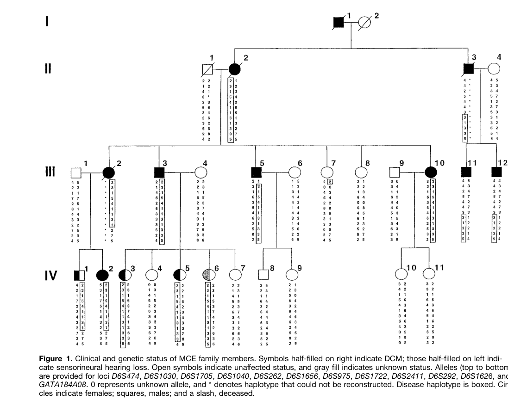

Dilated cardiomyopathy 1J (CMD1J) is an autosomal dominant cardio-auditory syndrome caused by heterozygous truncating variants in EYA4, the gene encoding a transcriptional co-activator that partners the SIX-family homeodomain factors. It is defined by a temporal sequence rather than by a single organ: postlingual, progressive sensorineural hearing loss appears first, moderate to severe by late adolescence, and ventricular dilation with systolic dysfunction follows decades later, producing congestive heart failure after the fourth decade. The syndrome was delimited in two kindreds by linkage to 6q23-q24 in 2000, and the causal 4,846-bp EYA4 deletion was identified in 2005. Mechanistically CMD1J sits apart from the sarcomeric and cytoskeletal dilated cardiomyopathies that dominate this part of the nosology. There is no structural contractile protein defect: the primary lesion is transcriptional. The truncated 193-residue Eya4 peptide fails to bind wild-type Eya4 or Six proteins, so the Eya4-Six1 complex cannot repress CDKN1B/p27Kip1; p27 rises, casein kinase-2 alpha activity and HDAC2 phosphorylation fall, and the cardiomyocyte hypertrophic stress-response program is disrupted. Transgenic mice overexpressing the E193 allele develop a dilated phenotype, whereas mice overexpressing wild-type Eya4 become hypertrophic - opposite directions on the same axis, and pressure overload worsens both. The entry is deliberately narrow. Most pathogenic EYA4 alleles cause isolated DFNA10 hearing loss with no cardiac disease, and the mechanism there appears to be simple haploinsufficiency rather than the dominant-negative complex poisoning proposed for E193. An EYA4 result therefore does not by itself establish CMD1J. The once-attractive rule that N-terminal truncations predict cardiac involvement while C-terminal truncations spare the heart has been contradicted by families carrying early truncations with normal echocardiograms, so variant position is not a substitute for cardiac phenotyping. Nearly all disease-specific knowledge derives from a handful of pedigrees; prevalence, unbiased penetrance, sex ratio, and variant-specific cardiac risk are all unestablished, and general dilated cardiomyopathy epidemiology must not be imported here.
Ask a research question about Dilated Cardiomyopathy 1J. OpenScientist will conduct autonomous deep research using the Disorder Mechanisms Knowledge Base and PubMed literature (typically 10-30 minutes).
Do not include personal health information in your question. Questions and results are cached in your browser's local storage.
Conditions with similar clinical presentations that must be differentiated from Dilated Cardiomyopathy 1J:
name: Dilated Cardiomyopathy 1J
creation_date: "2026-09-04T02:26:58Z"
synonyms:
- CMD1J
- DCM1J
- cardiomyopathy, dilated, 1J
- EYA4 familial dilated cardiomyopathy
- dilated cardiomyopathy with sensorineural hearing loss
- sensorineural hearing loss with dilated cardiomyopathy
description: >-
Dilated cardiomyopathy 1J (CMD1J) is an autosomal dominant cardio-auditory syndrome
caused by heterozygous truncating variants in EYA4, the gene encoding a
transcriptional co-activator that partners the SIX-family homeodomain factors. It is
defined by a temporal sequence rather than by a single organ: postlingual,
progressive sensorineural hearing loss appears first, moderate to severe by late
adolescence, and ventricular dilation with systolic dysfunction follows decades
later, producing congestive heart failure after the fourth decade. The syndrome was
delimited in two kindreds by linkage to 6q23-q24 in 2000, and the causal 4,846-bp
EYA4 deletion was identified in 2005.
Mechanistically CMD1J sits apart from the sarcomeric and cytoskeletal dilated
cardiomyopathies that dominate this part of the nosology. There is no structural
contractile protein defect: the primary lesion is transcriptional. The truncated
193-residue Eya4 peptide fails to bind wild-type Eya4 or Six proteins, so the
Eya4-Six1 complex cannot repress CDKN1B/p27Kip1; p27 rises, casein kinase-2 alpha
activity and HDAC2 phosphorylation fall, and the cardiomyocyte hypertrophic
stress-response program is disrupted. Transgenic mice overexpressing the E193 allele
develop a dilated phenotype, whereas mice overexpressing wild-type Eya4 become
hypertrophic - opposite directions on the same axis, and pressure overload worsens
both.
The entry is deliberately narrow. Most pathogenic EYA4 alleles cause isolated DFNA10
hearing loss with no cardiac disease, and the mechanism there appears to be simple
haploinsufficiency rather than the dominant-negative complex poisoning proposed for
E193. An EYA4 result therefore does not by itself establish CMD1J. The
once-attractive rule that N-terminal truncations predict cardiac involvement while
C-terminal truncations spare the heart has been contradicted by families carrying
early truncations with normal echocardiograms, so variant position is not a
substitute for cardiac phenotyping. Nearly all disease-specific knowledge derives
from a handful of pedigrees; prevalence, unbiased penetrance, sex ratio, and
variant-specific cardiac risk are all unestablished, and general dilated
cardiomyopathy epidemiology must not be imported here.
category: Genetic
classifications:
harrisons_chapter:
- classification_value: CARDIOVASCULAR
- classification_value: GENETICS_ENVIRONMENT_DISEASE
disease_term:
preferred_term: dilated cardiomyopathy 1J
term:
id: MONDO:0011541
label: dilated cardiomyopathy 1J
parents:
- Dilated Cardiomyopathy
- Genetic Disorder
prevalence:
- population: Worldwide
measure_type: CASES_IN_LITERATURE
prevalence_class: NOT_YET_DOCUMENTED
notes: >-
No population-based estimate exists. The entity was defined from two kindreds
ascertained through combined hearing loss and cardiomyopathy, and the literature
has not moved beyond individual families since. Recorded as
NOT_YET_DOCUMENTED rather than borrowing a rate from all-cause dilated
cardiomyopathy, which the deep-research report explicitly warned against.
EYA4 as a whole is a minor contributor even to dominant hearing loss - about
1.5% of a 531-proband Spanish cohort - and the cardio-auditory subset is a small
fraction of that.
evidence:
- reference: PMID:10769282
reference_title: "Dilated cardiomyopathy and sensorineural hearing loss: a heritable syndrome that maps to 6q23-24."
supports: SUPPORT
evidence_source: HUMAN_CLINICAL
snippet: >-
Clinical evaluations of 2 kindreds demonstrated autosomal-dominant
transmission and age-related penetrance of both SNHL and DCM in the absence of
other disorders.
explanation: >-
Establishes the ascertainment base of the entity - two kindreds - which is why
no population frequency can be quoted.
- reference: PMID:32277154
reference_title: "Insights into the pathophysiology of DFNA10 hearing loss associated with novel EYA4 variants."
supports: SUPPORT
evidence_source: HUMAN_CLINICAL
snippet: >-
The contribution of EYA4 mutations to ADNSHL in Spain is, therefore, very
limited (~1.5%, 8/531).
explanation: >-
Bounds the upper envelope: EYA4 disease of any kind is rare in a large
systematically screened dominant hearing-loss cohort, and the cardio-auditory
form is rarer still. Cited as a ceiling, not as a CMD1J rate.
inheritance:
- name: Autosomal Dominant
description: >-
A single heterozygous truncating EYA4 allele is sufficient. Transmission is
vertical with a 50% recurrence risk per offspring, and penetrance is
age-dependent rather than incomplete in the usual sense: a young carrier
typically has hearing loss and a normal echocardiogram, so one normal cardiac
study does not exclude later disease. The original linkage analysis modelled 95%
penetrance, but that was a statistical parameter, not an observed lifetime
figure, and it should not be curated as a penetrance estimate.
inheritance_term:
preferred_term: Autosomal dominant inheritance
term:
id: HP:0000006
label: Autosomal dominant inheritance
evidence:
- reference: PMID:10769282
reference_title: "Dilated cardiomyopathy and sensorineural hearing loss: a heritable syndrome that maps to 6q23-24."
supports: SUPPORT
evidence_source: HUMAN_CLINICAL
snippet: >-
Clinical evaluations of 2 kindreds demonstrated autosomal-dominant
transmission and age-related penetrance of both SNHL and DCM in the absence of
other disorders.
explanation: >-
States both the dominant mode and the age-related penetrance that governs
cascade surveillance in this syndrome.
- name: Age-Dependent Penetrance
description: >-
Cardiac penetrance is a function of age, not of an all-or-nothing modifier. In
the founding families the auditory phenotype was established by late adolescence
while ventricular dysfunction did not become clinically evident until after the
fourth decade, leaving a long interval in which a carrier is hearing-positive and
cardiac-negative. That interval is the surveillance window, and it is why the
entry records no lifetime penetrance number.
inheritance_term:
preferred_term: Typified by incomplete penetrance
term:
id: HP:0003829
label: Typified by incomplete penetrance
evidence:
- reference: PMID:10769282
reference_title: "Dilated cardiomyopathy and sensorineural hearing loss: a heritable syndrome that maps to 6q23-24."
supports: SUPPORT
evidence_source: HUMAN_CLINICAL
snippet: >-
Moderate-to-severe hearing loss was evident by late adolescence, whereas
ventricular dysfunction produced progressive congestive heart failure after the
fourth decade.
explanation: >-
Quantifies the age separation between the two organ phenotypes, which is what
makes cardiac penetrance age-dependent rather than fixed.
mechanistic_hypotheses:
- hypothesis_group_id: eya4_e193_dominant_negative
hypothesis_label: E193 acts as a dominant-negative poison of the Eya4-Six complex
status: CANONICAL
description: >-
The prevailing model is that the CMD1J allele is not merely a null. The truncated
193-residue peptide loses the ability to bind wild-type Eya4 and Six proteins,
which is precisely the property retained by the truncated peptides found in
hearing-loss-only families. On this account the cardiac phenotype requires
active disruption of the Eya4-Six transcriptional complex, and simple loss of one
functional allele is not enough to produce it. This is the model that explains
why most EYA4 truncations spare the heart.
evidence:
- reference: PMID:15735644
reference_title: "Mutation in the transcriptional coactivator EYA4 causes dilated cardiomyopathy and sensorineural hearing loss."
supports: SUPPORT
evidence_source: IN_VITRO
snippet: >-
Eya4 peptides associated with SNHL, but not the shortened 193-amino acid
peptide associated with dilated cardiomyopathy and SNHL, bound wild-type Eya4
and associated with Six proteins.
explanation: >-
The binding contrast is the direct experimental basis of this hypothesis: the
cardiac allele is the one that cannot join the complex, while the
hearing-only alleles can.
- hypothesis_group_id: eya4_haploinsufficiency
hypothesis_label: EYA4 haploinsufficiency as the shared DFNA10 mechanism
status: ALTERNATIVE
description: >-
The competing account for EYA4 disease generally is straightforward
haploinsufficiency - truncated protein is not expressed, dosage falls, and the
cochlea, which is more dosage-sensitive than the myocardium, fails first. This
is well supported for DFNA10 hearing loss. It is recorded here as ALTERNATIVE
rather than CANONICAL for CMD1J specifically, because a pure dosage model does
not by itself explain why most truncating alleles spare the heart while E193 does
not. The two models are not mutually exclusive: haploinsufficiency may drive the
auditory branch while a dominant-negative effect is required for the cardiac one.
evidence:
- reference: PMID:32277154
reference_title: "Insights into the pathophysiology of DFNA10 hearing loss associated with novel EYA4 variants."
supports: SUPPORT
evidence_source: IN_VITRO
snippet: >-
Transient expression of the c-myc-tagged EYA4 mutants in mammalian COS7 cells
revealed absence of expression of the p.S534* mutant, consistent with a model
of haploinsufficiency reported for all previously described EYA4 truncating
mutations.
explanation: >-
Direct expression evidence for the haploinsufficiency model in a truncating
EYA4 allele, from a cohort whose probands had hearing loss without
cardiomyopathy.
pathophysiology:
- name: EYA4 Heterozygous Truncating Variant
description: >-
The initiating lesion is a germline heterozygous truncating change in EYA4 at
6q23-q24. The founding CMD1J allele deletes 4,846 bp and produces a peptide
terminating after residue 193; a second allele, E215, truncates slightly later
and produces a stable mutant protein detectable in myocardium. EYA4 encodes a
transcriptional co-activator with an N-terminal variable transactivation region
and a conserved C-terminal Eya domain that carries phosphatase activity and
mediates binding to the SIX family. Because Eya proteins have no DNA-binding
domain of their own, that Six interaction is not incidental - it is how EYA4
reaches chromatin at all.
biological_scale: MOLECULAR
conforms_to: "cardiomyopathy_maladaptive_remodeling#Primary Cardiomyocyte Insult"
cell_types:
- preferred_term: ventricular cardiomyocyte
term:
id: CL:0000746
label: cardiac muscle cell
molecular_functions:
- preferred_term: EYA4 transcription co-activator function
modifier: DECREASED
term:
id: GO:0003712
label: transcription coregulator activity
- preferred_term: Eya-domain tyrosine phosphatase activity
modifier: DECREASED
term:
id: GO:0004725
label: protein tyrosine phosphatase activity
downstream:
- target: Failure of Eya4-Six1 Complex Assembly
causal_link_type: DIRECT
description: >-
The truncation removes the Eya domain surfaces required for Six binding and
for self-association, so the complex cannot form normally.
evidence:
- reference: PMID:15735644
reference_title: "Mutation in the transcriptional coactivator EYA4 causes dilated cardiomyopathy and sensorineural hearing loss."
supports: SUPPORT
evidence_source: IN_VITRO
snippet: >-
Eya4 peptides associated with SNHL, but not the shortened 193-amino acid
peptide associated with dilated cardiomyopathy and SNHL, bound wild-type Eya4
and associated with Six proteins.
explanation: >-
Directly ties the CMD1J truncation to loss of Six binding and Eya4
self-association, which is this edge.
- target: Cochlear EYA4 Insufficiency
causal_link_type: DIRECT
description: >-
The same allele acts in the cochlea, where EYA4 has an established role, and
produces the auditory branch of the syndrome. This is the parallel arm of the
mechanism rather than a consequence of the cardiac arm.
evidence:
- reference: PMID:10769282
reference_title: "Dilated cardiomyopathy and sensorineural hearing loss: a heritable syndrome that maps to 6q23-24."
supports: SUPPORT
evidence_source: HUMAN_CLINICAL
snippet: >-
A syndrome of juvenile-onset SNHL and adult-onset DCM is caused by a mutation
at 6q23 to 24 (locus designated CMD1J).
explanation: >-
Establishes that a single locus lesion generates both organ phenotypes,
which is what licenses drawing the auditory branch from the same node.
evidence:
- reference: PMID:15735644
reference_title: "Mutation in the transcriptional coactivator EYA4 causes dilated cardiomyopathy and sensorineural hearing loss."
supports: SUPPORT
evidence_source: HUMAN_CLINICAL
snippet: >-
Unlike previously described mutations causing dilated cardiomyopathy that
affect structural proteins, this mutation deletes 4,846 bp of the human
transcriptional coactivator gene EYA4.
explanation: >-
Identifies the causal lesion and states the point that separates this entity
from the sarcomeric dilated cardiomyopathies: the defective protein is a
transcriptional co-activator, not a structural one.
- reference: PMID:26499333
reference_title: "Eya4 Induces Hypertrophy via Regulation of p27kip1."
supports: SUPPORT
evidence_source: HUMAN_CLINICAL
snippet: >-
Finally, we identified a new heterozygous truncating Eya4 mutation, E215, which
leads to similar clinical features of disease and a stable myocardial
expression of the mutant protein as seen with E193.
explanation: >-
Adds the second truncating allele and, importantly, records that the mutant
protein is stably expressed in myocardium rather than degraded - the
observation a pure haploinsufficiency account has to accommodate.
- name: Failure of Eya4-Six1 Complex Assembly
description: >-
The truncated peptide neither self-associates with wild-type Eya4 nor binds Six
proteins. Because Six binding is what carries Eya proteins into the nucleus and
onto target promoters, the consequence is a transcriptional complex that is
absent or non-functional at its cardiac targets, rather than a co-activator that
is simply present at half dose.
biological_scale: MOLECULAR
cell_types:
- preferred_term: ventricular cardiomyocyte
term:
id: CL:0000746
label: cardiac muscle cell
biological_processes:
- preferred_term: Eya4-Six1 mediated transcriptional regulation
modifier: LOSS_OF_FUNCTION
term:
id: GO:0006355
label: regulation of DNA-templated transcription
downstream:
- target: Derepression of CDKN1B/p27Kip1
causal_link_type: DIRECT
description: >-
Eya4 is a negative regulator of p27 transcription, and the mutant regulates it
in the opposite direction, so loss of normal complex function raises p27.
evidence:
- reference: PMID:26499333
reference_title: "Eya4 Induces Hypertrophy via Regulation of p27kip1."
supports: SUPPORT
evidence_source: IN_VITRO
snippet: >-
Luciferase and chromatin immunoprecipitation assays confirmed Eya4 and E193
bind and regulate p27 expression in a contradictory manner.
explanation: >-
Promoter occupancy plus reporter activity establish that the complex acts
directly on p27 and that the mutant inverts that action - the causal content
of this edge.
evidence:
- reference: PMID:15735644
reference_title: "Mutation in the transcriptional coactivator EYA4 causes dilated cardiomyopathy and sensorineural hearing loss."
supports: SUPPORT
evidence_source: IN_VITRO
snippet: >-
These data define unrecognized and crucial roles for Eya4-Six-mediated
transcriptional regulation in normal heart function.
explanation: >-
States the conclusion this node encodes: Eya4-Six transcriptional regulation
is required for normal cardiac function, so its failure is a cardiac lesion.
- name: Derepression of CDKN1B/p27Kip1
description: >-
With the Eya4-Six1 complex non-functional, transcriptional repression of
CDKN1B is relieved and p27Kip1 protein rises in cardiomyocytes expressing the
mutant. p27 is the hinge of the mechanism: it is the point at which a
transcriptional defect becomes a growth-signalling defect.
biological_scale: MOLECULAR
cell_types:
- preferred_term: ventricular cardiomyocyte
term:
id: CL:0000746
label: cardiac muscle cell
biological_processes:
- preferred_term: repression of CDKN1B transcription by the Eya4-Six1 complex
modifier: DECREASED
term:
id: GO:0045892
label: negative regulation of DNA-templated transcription
downstream:
- target: Reduced CK2-alpha Activity and HDAC2 Phosphorylation
causal_link_type: DIRECT
description: >-
Elevated p27 lowers casein kinase-2 alpha activity, and CK2 alpha is the kinase
whose phosphorylation activates HDAC2.
evidence:
- reference: PMID:26499333
reference_title: "Eya4 Induces Hypertrophy via Regulation of p27kip1."
supports: SUPPORT
evidence_source: MODEL_ORGANISM
snippet: >-
Activity and phosphorylation status of the downstream molecules casein
kinase-2α and histone deacetylase 2 were significantly elevated in Eya4- but
significantly reduced in E193-overexpressing animals compared with wild-type
littermates.
explanation: >-
Measured in transgenic mice, and the two directions are opposite in wild-type
and mutant animals, which is what makes this an ordered step rather than a
correlation.
evidence:
- reference: PMID:26499333
reference_title: "Eya4 Induces Hypertrophy via Regulation of p27kip1."
supports: SUPPORT
evidence_source: IN_VITRO
snippet: >-
In this study, we first show Eya4 and E193 alter the expression of p27(kip1) in
vitro, suggesting Eya4 is a negative regulator of p27.
explanation: >-
Establishes p27 as the regulated target and Eya4 as its negative regulator,
which is the claim this node makes.
- name: Reduced CK2-alpha Activity and HDAC2 Phosphorylation
description: >-
Casein kinase-2 alpha activity and HDAC2 phosphorylation both fall in
E193-expressing myocardium. HDAC2 is a core effector of the cardiomyocyte
hypertrophic gene program, so this is the step at which the p27 signal reaches
chromatin remodelling and the stress-response transcriptional program.
biological_scale: MOLECULAR
cell_types:
- preferred_term: ventricular cardiomyocyte
term:
id: CL:0000746
label: cardiac muscle cell
biological_processes:
- preferred_term: HDAC2-dependent chromatin remodeling
modifier: DECREASED
term:
id: GO:0006338
label: chromatin remodeling
downstream:
- target: Disrupted Cardiomyocyte Hypertrophic Stress Response
causal_link_type: DIRECT
description: >-
The CK2 alpha and HDAC2 axis is the effector arm of the hypertrophic response,
so its suppression disorganizes that response.
evidence:
- reference: PMID:26499333
reference_title: "Eya4 Induces Hypertrophy via Regulation of p27kip1."
supports: SUPPORT
evidence_source: OTHER
snippet: >-
Our results implicate Eya4/Six1 regulates normal cardiac function via
p27/casein kinase-2α/histone deacetylase 2 and indicate that mutations within
this transcriptional complex and signaling cascade lead to the development of
cardiomyopathy.
explanation: >-
The authors' own statement of the pathway order. Graded OTHER because it is a
synthesis conclusion drawn across the paper's in vitro and transgenic
results rather than a single experimental observation.
evidence:
- reference: PMID:26499333
reference_title: "Eya4 Induces Hypertrophy via Regulation of p27kip1."
supports: SUPPORT
evidence_source: MODEL_ORGANISM
snippet: >-
Activity and phosphorylation status of the downstream molecules casein
kinase-2α and histone deacetylase 2 were significantly elevated in Eya4- but
significantly reduced in E193-overexpressing animals compared with wild-type
littermates.
explanation: >-
Reports the measurement this node asserts, in the disease-allele direction.
- name: Disrupted Cardiomyocyte Hypertrophic Stress Response
description: >-
The cardiomyocyte can no longer mount a normally organised growth response.
Direction matters here and is easy to state backwards: overexpressing wild-type
Eya4 drives hypertrophy, whereas the E193 allele drives dilation. The lesion is
therefore not "too little growth signalling" in isolation but a
misdirected stress-response program, and it is unmasked by haemodynamic load -
pressure overload aggravates both phenotypes.
biological_scale: CELLULAR
cell_types:
- preferred_term: ventricular cardiomyocyte
term:
id: CL:0000746
label: cardiac muscle cell
biological_processes:
- preferred_term: cardiac muscle hypertrophy
modifier: ABNORMAL
term:
id: GO:0003300
label: cardiac muscle hypertrophy
downstream:
- target: Adverse Ventricular Remodeling
causal_link_type: DIRECT
description: >-
Sustained disorganisation of the cardiomyocyte growth program remodels the
chamber, and the transgenic model shows this progressing to a dilated
phenotype.
evidence:
- reference: PMID:26499333
reference_title: "Eya4 Induces Hypertrophy via Regulation of p27kip1."
supports: SUPPORT
evidence_source: MODEL_ORGANISM
snippet: >-
Magnetic resonance imaging and hemodynamic analysis indicate
Eya4-overexpression results in an age-dependent development of hypertrophy
already under baseline conditions with no obvious functional effects, whereas
E193 animals develop onset of dilative cardiomyopathy as seen in human E193
patients.
explanation: >-
Imaging and haemodynamic evidence that the mutant allele specifically
produces chamber dilation, and that it does so in a way that matches the
human phenotype.
evidence:
- reference: PMID:26499333
reference_title: "Eya4 Induces Hypertrophy via Regulation of p27kip1."
supports: SUPPORT
evidence_source: MODEL_ORGANISM
snippet: >-
Both cardiac phenotypes were aggravated on pressure overload.
explanation: >-
Shows the response is load-sensitive, which is what identifies it as a
defective stress-response program rather than a fixed structural deficit.
- name: Adverse Ventricular Remodeling
description: >-
The ventricle enlarges and its wall composition changes - the conventional
adverse remodelling picture, reached here from a transcriptional rather than a
sarcomeric lesion. The best-characterised evidence for this node is imaging and
haemodynamic rather than histological: cardiac MRI in the allele-specific
transgenic model tracks the progression to a dilated chamber. Descriptions of
explanted and autopsy myocardium from the founding kindreds exist in the primary
report but sit in sections not covered by the cached abstract, so the
histological detail is deliberately not asserted here.
biological_scale: TISSUE
conforms_to: "cardiomyopathy_maladaptive_remodeling#Ventricular Remodeling"
cell_types:
- preferred_term: ventricular cardiomyocyte
term:
id: CL:0000746
label: cardiac muscle cell
- preferred_term: cardiac fibroblast
term:
id: CL:0002548
label: fibroblast of cardiac tissue
biological_processes:
- preferred_term: cardiac muscle hypertrophy in response to stress
modifier: ABNORMAL
term:
id: GO:0014898
label: cardiac muscle hypertrophy in response to stress
- preferred_term: interstitial extracellular matrix deposition
modifier: INCREASED
term:
id: GO:0030198
label: extracellular matrix organization
locations:
- preferred_term: left ventricular myocardium
term:
id: UBERON:0002084
label: heart left ventricle
downstream:
- target: Progressive Systolic Dysfunction
causal_link_type: DIRECT
description: >-
A dilated, fibrotic ventricle contracts less effectively, and in the founding
pedigrees ventricular dysfunction was the observed consequence.
evidence:
- reference: PMID:10769282
reference_title: "Dilated cardiomyopathy and sensorineural hearing loss: a heritable syndrome that maps to 6q23-24."
supports: SUPPORT
evidence_source: HUMAN_CLINICAL
snippet: >-
Moderate-to-severe hearing loss was evident by late adolescence, whereas
ventricular dysfunction produced progressive congestive heart failure after
the fourth decade.
explanation: >-
Records the progression from ventricular dysfunction to congestive failure in
the human syndrome, which is the clinical form of this edge.
evidence:
- reference: PMID:26499333
reference_title: "Eya4 Induces Hypertrophy via Regulation of p27kip1."
supports: SUPPORT
evidence_source: MODEL_ORGANISM
snippet: >-
Magnetic resonance imaging and hemodynamic analysis indicate
Eya4-overexpression results in an age-dependent development of hypertrophy
already under baseline conditions with no obvious functional effects, whereas
E193 animals develop onset of dilative cardiomyopathy as seen in human E193
patients.
explanation: >-
The remodelling endpoint measured directly by imaging in the allele-specific
model.
- name: Progressive Systolic Dysfunction
description: >-
Contractile performance falls and the clinical syndrome of heart failure
emerges, characteristically after the fourth decade. This is the node the
disease is named for and the one on which the auditory and cardiac branches
diverge in timing: hearing loss has by this point been present for two decades or
more.
biological_scale: ORGANISM
conforms_to: "cardiomyopathy_maladaptive_remodeling#Progressive Contractile Dysfunction"
cell_types:
- preferred_term: ventricular cardiomyocyte
term:
id: CL:0000746
label: cardiac muscle cell
biological_processes:
- preferred_term: heart contraction
modifier: DECREASED
term:
id: GO:0060047
label: heart contraction
locations:
- preferred_term: heart
term:
id: UBERON:0000948
label: heart
downstream:
- target: Dilated Cardiomyopathy
causal_link_type: DIRECT
- target: Left Ventricular Systolic Dysfunction
causal_link_type: DIRECT
- target: Congestive Heart Failure
causal_link_type: DIRECT
evidence:
- reference: PMID:15735644
reference_title: "Mutation in the transcriptional coactivator EYA4 causes dilated cardiomyopathy and sensorineural hearing loss."
supports: SUPPORT
evidence_source: HUMAN_CLINICAL
snippet: >-
We identified a human mutation that causes dilated cardiomyopathy and heart
failure preceded by sensorineural hearing loss (SNHL).
explanation: >-
States the progression to heart failure as a consequence of the EYA4 lesion
in humans.
evidence:
- reference: PMID:10769282
reference_title: "Dilated cardiomyopathy and sensorineural hearing loss: a heritable syndrome that maps to 6q23-24."
supports: SUPPORT
evidence_source: HUMAN_CLINICAL
snippet: >-
Moderate-to-severe hearing loss was evident by late adolescence, whereas
ventricular dysfunction produced progressive congestive heart failure after the
fourth decade.
explanation: >-
Directly reports progressive ventricular dysfunction and its clinical
timing in the founding kindreds.
- name: Cochlear EYA4 Insufficiency
description: >-
The auditory branch. EYA4 is required in the inner ear, and reduced functional
EYA4 there produces postlingual, progressive sensorineural hearing loss. The
cochlear cell-level mechanism in humans is not resolved: hair cells are the
plausible target and are used as the working annotation, but the evidence does
not localise the lesion definitively, and this branch is where CMD1J is
indistinguishable from isolated DFNA10.
biological_scale: TISSUE
cell_types:
- preferred_term: cochlear hair cell
term:
id: CL:0000202
label: auditory hair cell
biological_processes:
- preferred_term: sensory perception of sound
modifier: DECREASED
term:
id: GO:0007605
label: sensory perception of sound
locations:
- preferred_term: cochlea
term:
id: UBERON:0001844
label: cochlea
downstream:
- target: Postlingual Bilateral Sensorineural Hearing Impairment
causal_link_type: DIRECT
description: >-
The cochlear lesion presents as bilateral, near-symmetric loss beginning after
speech acquisition rather than as a congenital or unilateral deficit.
evidence:
- reference: PMID:30155266
reference_title: "Sensorineural hearing loss and mild cardiac phenotype caused by an EYA4 mutation."
supports: SUPPORT
evidence_source: HUMAN_CLINICAL
snippet: >-
Pure-tone audiometry revealed bilateral, nearly symmetric, moderate
sensorineural hearing loss in the low and middle frequencies.
explanation: >-
Audiometric characterisation of the loss produced by a pathogenic EYA4
allele, supporting the laterality and symmetry this edge asserts. As
elsewhere in this entry, the individual had subclinical rather than overt
cardiac disease.
- target: Progressive Sensorineural Hearing Loss
causal_link_type: DIRECT
evidence:
- reference: PMID:10769282
reference_title: "Dilated cardiomyopathy and sensorineural hearing loss: a heritable syndrome that maps to 6q23-24."
supports: SUPPORT
evidence_source: HUMAN_CLINICAL
snippet: >-
Moderate-to-severe hearing loss was evident by late adolescence, whereas
ventricular dysfunction produced progressive congestive heart failure after
the fourth decade.
explanation: >-
Establishes the severity and timing of the auditory phenotype produced by
this branch.
evidence:
- reference: PMID:10769282
reference_title: "Dilated cardiomyopathy and sensorineural hearing loss: a heritable syndrome that maps to 6q23-24."
supports: SUPPORT
evidence_source: HUMAN_CLINICAL
snippet: >-
The disease locus must lie within a 2.8 cM interval between loci D6S975 and
D6S292, a location that overlaps an SNHL disease locus (DFNA10). However,
DFNA10 does not cause cardiomyopathy.
explanation: >-
The locus overlap with DFNA10 is the original evidence that the auditory arm of
this syndrome runs through the same gene as isolated dominant hearing loss,
and the second sentence is why the two are still separate entities.
phenotypes:
- name: Dilated Cardiomyopathy
category: Cardiac
description: >-
The defining cardiac phenotype and the reason the entity carries a CMD locus
symbol. Onset is adult, characteristically after the fourth decade in the
founding kindreds, and it is preceded by two decades or more of hearing loss.
Because expression is age-dependent, a genotype-positive young adult with a
normal echocardiogram is not phenotype-negative for life.
phenotype_term:
preferred_term: Dilated cardiomyopathy
term:
id: HP:0001644
label: Dilated cardiomyopathy
clinical_course: PROGRESSIVE
onset:
onset_category: ADULT
evidence:
- reference: PMID:15735644
reference_title: "Mutation in the transcriptional coactivator EYA4 causes dilated cardiomyopathy and sensorineural hearing loss."
supports: SUPPORT
evidence_source: HUMAN_CLINICAL
snippet: >-
We identified a human mutation that causes dilated cardiomyopathy and heart
failure preceded by sensorineural hearing loss (SNHL).
explanation: >-
Establishes dilated cardiomyopathy as a consequence of the causal EYA4 lesion
in humans, and records the ordering relative to hearing loss.
- reference: PMID:26499333
reference_title: "Eya4 Induces Hypertrophy via Regulation of p27kip1."
supports: SUPPORT
evidence_source: OTHER
snippet: >-
E193, a heterozygous truncating mutation in the human transcription cofactor
Eyes absent 4 (Eya4), causes hearing impairment followed by dilative
cardiomyopathy.
explanation: >-
Independent restatement of the allele-to-phenotype link with the same temporal
ordering. Graded OTHER because the sentence is a background assertion of
established human genetics in this paper's introduction, not a result of its
own experiments, which are graded IN_VITRO and MODEL_ORGANISM elsewhere in
this entry.
- name: Left Ventricular Systolic Dysfunction
category: Cardiac
description: >-
Impaired ventricular contraction is the functional lesion underlying the
clinical syndrome, and in the founding kindreds it is what drove the transition
to symptomatic heart failure. No EYA4-specific ejection-fraction distribution or
strain dataset exists, so the phenotype is recorded qualitatively rather than
with a numeric threshold.
phenotype_term:
preferred_term: Left ventricular systolic dysfunction
term:
id: HP:0025169
label: Left ventricular systolic dysfunction
clinical_course: PROGRESSIVE
evidence:
- reference: PMID:10769282
reference_title: "Dilated cardiomyopathy and sensorineural hearing loss: a heritable syndrome that maps to 6q23-24."
supports: SUPPORT
evidence_source: HUMAN_CLINICAL
snippet: >-
Moderate-to-severe hearing loss was evident by late adolescence, whereas
ventricular dysfunction produced progressive congestive heart failure after the
fourth decade.
explanation: >-
Reports ventricular dysfunction directly in the founding kindreds and ties it
to the clinical course.
- reference: PMID:15735644
reference_title: "Mutation in the transcriptional coactivator EYA4 causes dilated cardiomyopathy and sensorineural hearing loss."
supports: SUPPORT
evidence_source: MODEL_ORGANISM
snippet: >-
Attenuated eya4 transcript levels produced morphologic and hemodynamic features
of heart failure.
explanation: >-
Zebrafish morpholino knockdown reproduces the haemodynamic phenotype,
corroborating the human observation. Recorded as MODEL_ORGANISM and paired
with the human evidence above rather than standing alone.
- name: Congestive Heart Failure
category: Cardiac
description: >-
The clinical endpoint of the cardiac branch, emerging after the fourth decade
in the original families and progressive thereafter. Advanced disease in these
pedigrees reached transplantation.
phenotype_term:
preferred_term: Congestive heart failure
term:
id: HP:0001635
label: Congestive heart failure
clinical_course: PROGRESSIVE
onset:
onset_category: ADULT
evidence:
- reference: PMID:10769282
reference_title: "Dilated cardiomyopathy and sensorineural hearing loss: a heritable syndrome that maps to 6q23-24."
supports: SUPPORT
evidence_source: HUMAN_CLINICAL
snippet: >-
Moderate-to-severe hearing loss was evident by late adolescence, whereas
ventricular dysfunction produced progressive congestive heart failure after the
fourth decade.
explanation: >-
Names progressive congestive heart failure and its timing in the kindreds that
define the entity.
- reference: PMID:15735644
reference_title: "Mutation in the transcriptional coactivator EYA4 causes dilated cardiomyopathy and sensorineural hearing loss."
supports: SUPPORT
evidence_source: HUMAN_CLINICAL
snippet: >-
We identified a human mutation that causes dilated cardiomyopathy and heart
failure preceded by sensorineural hearing loss (SNHL).
explanation: >-
Confirms heart failure, not merely asymptomatic ventricular enlargement, as a
consequence of the causal allele.
- name: Progressive Sensorineural Hearing Loss
category: Auditory
description: >-
The first phenotype to appear and, in a family with a known variant, the
clinical marker that identifies a young adult at cardiac risk before any cardiac
abnormality is detectable. It is postlingual, so speech and language develop
normally, and progressive, reaching moderate to severe by late adolescence in the
founding kindreds. This is also the phenotype CMD1J shares entirely with isolated
DFNA10, which is why hearing loss alone does not distinguish the two.
phenotype_term:
preferred_term: Progressive sensorineural hearing impairment
term:
id: HP:0000408
label: Progressive sensorineural hearing impairment
clinical_course: PROGRESSIVE
onset:
onset_category: JUVENILE
evidence:
- reference: PMID:10769282
reference_title: "Dilated cardiomyopathy and sensorineural hearing loss: a heritable syndrome that maps to 6q23-24."
supports: SUPPORT
evidence_source: HUMAN_CLINICAL
snippet: >-
Moderate-to-severe hearing loss was evident by late adolescence, whereas
ventricular dysfunction produced progressive congestive heart failure after the
fourth decade.
explanation: >-
Gives both the severity reached and the age by which it is reached, and
establishes that hearing loss precedes the cardiac phenotype.
- reference: PMID:10769282
reference_title: "Dilated cardiomyopathy and sensorineural hearing loss: a heritable syndrome that maps to 6q23-24."
supports: SUPPORT
evidence_source: HUMAN_CLINICAL
snippet: >-
A syndrome of juvenile-onset SNHL and adult-onset DCM is caused by a mutation
at 6q23 to 24 (locus designated CMD1J).
explanation: >-
States the juvenile onset of the auditory phenotype explicitly, which is what
the JUVENILE_ONSET category records.
- name: Postlingual Bilateral Sensorineural Hearing Impairment
category: Auditory
description: >-
EYA4-related hearing loss is bilateral and close to symmetric, and it begins
after speech acquisition. The audiometric detail here is drawn from a Japanese
proband carrying a pathogenic EYA4 nonsense allele who had subclinical rather
than overt cardiac findings - that is, from the EYA4 spectrum rather than from a
genetically confirmed CMD1J pedigree - and it is recorded on that basis. The
laterality and postlingual timing are consistent across EYA4 reports; the
frequency profile is not, and is not asserted.
phenotype_term:
preferred_term: Postlingual sensorineural hearing impairment
term:
id: HP:0008596
label: Postlingual sensorineural hearing impairment
evidence:
- reference: PMID:30155266
reference_title: "Sensorineural hearing loss and mild cardiac phenotype caused by an EYA4 mutation."
supports: SUPPORT
evidence_source: HUMAN_CLINICAL
snippet: >-
Pure-tone audiometry revealed bilateral, nearly symmetric, moderate
sensorineural hearing loss in the low and middle frequencies.
explanation: >-
Audiometric characterisation in a carrier of a pathogenic EYA4 variant. Cited
for laterality and symmetry of EYA4 hearing loss; the explanation and the
phenotype description both record that this individual did not have overt
dilated cardiomyopathy.
- reference: PMID:33301229
reference_title: "Early truncation of the N-terminal variable region of EYA4 gene causes dominant hearing loss without cardiac phenotype."
supports: SUPPORT
evidence_source: HUMAN_CLINICAL
snippet: >-
We report a Chinese family cosegregating post-lingual onset, progressive ADHL
with a novel nonsense mutation NM_004100.4:c.543C>G (p.Tyr181Ter) of EYA4.
explanation: >-
Independent confirmation that EYA4 hearing loss is postlingual and progressive.
As above, this family is non-syndromic, so the citation is for the auditory
character of EYA4 disease rather than for CMD1J itself.
genetic:
- name: EYA4 Heterozygous Truncating Variants
association: Heterozygous truncating and large-deletion alleles
relationship_type: CAUSATIVE
gene_term:
preferred_term: EYA4
term:
id: hgnc:3522
label: EYA4
features: >-
EYA4 sits at 6q23-q24 and encodes a transcriptional co-activator of roughly 640
residues, organised as an N-terminal variable transactivation region and a
conserved C-terminal Eya domain. The Eya domain carries the protein's phosphatase
activity and its binding surface for the SIX family; since Eya proteins have no
DNA-binding domain, that surface is how EYA4 is delivered to target promoters at
all. Both reported CMD1J alleles are heterozygous truncations. Two things
complicate variant interpretation and neither can be skipped. First, the large
majority of pathogenic EYA4 alleles cause isolated DFNA10 hearing loss with no
cardiac disease, so gene identity does not assign the entity. Second, the
once-proposed positional rule - N-terminal truncation predicts cardiac
involvement, C-terminal truncation spares the heart - has been contradicted by
an early-truncating family with normal cardiac studies, so variant position does
not assign it either. What does is cardiac phenotyping, repeated over time.
inheritance:
- name: Autosomal Dominant
inheritance_term:
preferred_term: Autosomal dominant inheritance
term:
id: HP:0000006
label: Autosomal dominant inheritance
evidence:
- reference: PMID:15735644
reference_title: "Mutation in the transcriptional coactivator EYA4 causes dilated cardiomyopathy and sensorineural hearing loss."
supports: SUPPORT
evidence_source: HUMAN_CLINICAL
snippet: >-
Unlike previously described mutations causing dilated cardiomyopathy that
affect structural proteins, this mutation deletes 4,846 bp of the human
transcriptional coactivator gene EYA4.
explanation: >-
The gene-disease identification for this entity, stating the class of lesion
and contrasting it with the structural-protein cardiomyopathies.
- reference: PMID:32277154
reference_title: "Insights into the pathophysiology of DFNA10 hearing loss associated with novel EYA4 variants."
supports: SUPPORT
evidence_source: OTHER
snippet: >-
EYA4 participates in the development of multiple organs, including the eye,
pituitary gland, muscle, kidney, inner ear and heart
explanation: >-
Establishes that heart and inner ear are both within EYA4's normal expression
and developmental remit, which is the background fact that makes a
cardio-auditory syndrome from one gene coherent. Graded OTHER as an
introductory review statement rather than a result of this paper's screen.
variants:
- name: EYA4 E193 (4,846-bp deletion)
description: >-
The founding CMD1J allele. A heterozygous deletion of 4,846 bp produces a
peptide truncated after residue 193. Its distinguishing biochemical property is
not that it is short but that it has lost the ability to bind wild-type Eya4
and Six proteins - a property the truncated peptides from hearing-loss-only
families retain. That contrast is the entire experimental basis for treating
the cardiac phenotype as a dominant-negative effect rather than a dosage
effect, and it is the allele carried into the transgenic mouse work.
gene:
preferred_term: EYA4
term:
id: hgnc:3522
label: EYA4
clinical_significance: PATHOGENIC
evidence:
- reference: PMID:15735644
reference_title: "Mutation in the transcriptional coactivator EYA4 causes dilated cardiomyopathy and sensorineural hearing loss."
supports: SUPPORT
evidence_source: IN_VITRO
snippet: >-
Eya4 peptides associated with SNHL, but not the shortened 193-amino acid
peptide associated with dilated cardiomyopathy and SNHL, bound wild-type Eya4
and associated with Six proteins.
explanation: >-
The binding assay that separates this allele from the hearing-loss-only
alleles and grounds the DOMINANT_NEGATIVE classification.
- name: EYA4 E215
description: >-
A second heterozygous truncating allele producing similar cardio-auditory
features. The observation that matters mechanistically is that the mutant
protein is stably expressed in myocardium: a stable truncated product is what a
dominant-negative model needs and what a pure nonsense-mediated-decay
haploinsufficiency model does not predict. Very few affected individuals have
been reported, so this allele's phenotype range is not defined.
gene:
preferred_term: EYA4
term:
id: hgnc:3522
label: EYA4
clinical_significance: PATHOGENIC
evidence:
- reference: PMID:26499333
reference_title: "Eya4 Induces Hypertrophy via Regulation of p27kip1."
supports: SUPPORT
evidence_source: HUMAN_CLINICAL
snippet: >-
Finally, we identified a new heterozygous truncating Eya4 mutation, E215,
which leads to similar clinical features of disease and a stable myocardial
expression of the mutant protein as seen with E193.
explanation: >-
Reports the allele, its clinical similarity to E193, and the stable
myocardial expression of the mutant protein.
- name: EYA4 p.Gln393Ter (c.1177C>T)
description: >-
Included as a negative control on the entity boundary rather than as a CMD1J
allele. A Japanese carrier of this pathogenic nonsense variant had progressive
sensorineural hearing loss with only minor electrocardiographic and
echocardiographic findings - no left ventricular dilatation and no impaired
contractility. Annotating this variant as CMD1J-causal would be an error, and
it is recorded here so that the mistake is visible rather than available.
gene:
preferred_term: EYA4
term:
id: hgnc:3522
label: EYA4
clinical_significance: PATHOGENIC
evidence:
- reference: PMID:30155266
reference_title: "Sensorineural hearing loss and mild cardiac phenotype caused by an EYA4 mutation."
supports: REFUTE
evidence_source: HUMAN_CLINICAL
snippet: >-
No problems were observed with the left ventricular dilatation or
contractility. At present, the patient suffers subclinical heart disease not
related to dilated cardiomyopathy.
explanation: >-
Refutes the claim that this pathogenic EYA4 allele causes dilated
cardiomyopathy. The carrier's cardiac assessment was explicitly negative for
the defining phenotype of this entry.
progression:
- phase: Presymptomatic carrier
age_range: birth to late childhood
notes: >-
A genotype-positive individual with normal hearing and a normal heart. Nothing
distinguishes this phase clinically; it is defined only by the familial variant.
- phase: Isolated progressive hearing loss
age_range: adolescence to fourth decade
notes: >-
Postlingual sensorineural hearing loss appears and progresses to moderate or
severe by late adolescence, with the heart still structurally and functionally
normal. This is the long clinically silent cardiac interval, and it is the phase
in which surveillance can change the outcome. A carrier in this phase is
indistinguishable from a DFNA10 patient on audiometry alone.
evidence:
- reference: PMID:10769282
reference_title: "Dilated cardiomyopathy and sensorineural hearing loss: a heritable syndrome that maps to 6q23-24."
supports: SUPPORT
evidence_source: HUMAN_CLINICAL
snippet: >-
Moderate-to-severe hearing loss was evident by late adolescence, whereas
ventricular dysfunction produced progressive congestive heart failure after the
fourth decade.
explanation: >-
Defines the boundaries of this phase - hearing loss established by late
adolescence, cardiac disease not until after the fourth decade.
- phase: Overt dilated cardiomyopathy and heart failure
age_range: after the fourth decade
notes: >-
Ventricular dilation and systolic dysfunction become detectable and then
symptomatic, producing progressive congestive heart failure. Advanced disease in
the founding kindreds reached transplantation. No CMD1J-specific survival,
transplant-free survival, or reverse-remodelling estimate exists, and general
dilated cardiomyopathy prognostic figures should not be substituted.
evidence:
- reference: PMID:15735644
reference_title: "Mutation in the transcriptional coactivator EYA4 causes dilated cardiomyopathy and sensorineural hearing loss."
supports: SUPPORT
evidence_source: HUMAN_CLINICAL
snippet: >-
We identified a human mutation that causes dilated cardiomyopathy and heart
failure preceded by sensorineural hearing loss (SNHL).
explanation: >-
Records the endpoint of the sequence and confirms the ordering relative to the
auditory phase.
diagnosis:
- name: Combined Cardiac and Audiologic Phenotyping
description: >-
The diagnosis is made by putting the two organ phenotypes together in one
pedigree, not by either alone. Cardiac assessment follows the general dilated
cardiomyopathy pathway - echocardiography first, cardiac magnetic resonance for
tissue characterisation and function, ECG and rhythm monitoring, natriuretic
peptides and high-sensitivity troponin - after excluding coronary disease,
abnormal loading, valvular and congenital disease, myocarditis, toxic and
endocrine causes. Pure-tone audiometry and a three-to-four-generation pedigree
covering both hearing and cardiac history are what convert a general dilated
cardiomyopathy workup into an assessment for this entity.
evidence:
- reference: PMID:39674807
reference_title: "Diagnosis and management of dilated cardiomyopathy: a systematic review of clinical practice guidelines and recommendations."
supports: SUPPORT
evidence_source: OTHER
snippet: >-
Our review revealed consensus on several key aspects: the definition of DCM,
the use of B-type natriuretic peptides and high-sensitivity troponin in
laboratory testing, the essential role of multimodality cardiovascular imaging
for initial diagnosis, genetic counselling, and the management of advanced
disease.
explanation: >-
Establishes the cardiac half of this workup as cross-guideline consensus.
Graded OTHER because the source is a systematic review of guideline documents
rather than a primary study, and it is general dilated cardiomyopathy
guidance rather than CMD1J-specific evidence.
- name: EYA4 Sequencing with Deletion and Duplication Analysis
description: >-
Molecular confirmation requires EYA4 coverage that includes copy-number
analysis, because the founding CMD1J allele is a multi-kilobase deletion that
exon-level sequencing alone will miss. A cardiomyopathy panel that omits EYA4, or
that covers it by sequencing only, can return a negative result in a genuinely
affected family. Pairing cardiomyopathy and hearing-loss gene content is the
practical way to cover a cardio-auditory presentation.
evidence:
- reference: PMID:15735644
reference_title: "Mutation in the transcriptional coactivator EYA4 causes dilated cardiomyopathy and sensorineural hearing loss."
supports: SUPPORT
evidence_source: HUMAN_CLINICAL
snippet: >-
Unlike previously described mutations causing dilated cardiomyopathy that
affect structural proteins, this mutation deletes 4,846 bp of the human
transcriptional coactivator gene EYA4.
explanation: >-
The size and class of the founding allele are what make copy-number analysis
necessary rather than optional.
differential_diagnoses:
- name: DFNA10 (EYA4-related nonsyndromic hearing loss)
description: >-
The differential that matters most, because it shares the gene, the inheritance
pattern, and the entire auditory phenotype. The distinction is cardiac and it is
temporal: DFNA10 carriers do not develop dilated cardiomyopathy, but a young
CMD1J carrier has not developed it yet either, so a single normal echocardiogram
in a young adult does not settle the question. Mechanistically the two appear to
diverge on whether the truncated peptide can still join the Eya4-Six complex.
distinguishing_features:
- >-
Absence of ventricular dilation and systolic dysfunction on serial cardiac
imaging into and beyond the fifth decade. Variant position is not a
distinguishing feature: the proposal that N-terminal truncations predict the
cardiac phenotype while C-terminal truncations spare the heart has been
contradicted by an early-truncating family with normal cardiac studies.
evidence:
- reference: PMID:33301229
reference_title: "Early truncation of the N-terminal variable region of EYA4 gene causes dominant hearing loss without cardiac phenotype."
supports: SUPPORT
evidence_source: HUMAN_CLINICAL
snippet: >-
Two affected members show no cardiac abnormalities at least until now revealed
by electrocardiography and echocardiography.
explanation: >-
Documents EYA4 carriers with hearing loss and objectively normal cardiac
studies, which is the phenotype that separates DFNA10 from this entry.
- reference: PMID:33301229
reference_title: "Early truncation of the N-terminal variable region of EYA4 gene causes dominant hearing loss without cardiac phenotype."
supports: REFUTE
evidence_source: OTHER
snippet: >-
It has been proposed that truncations of the C-terminal Eya domain lead to
non-syndromic HL, whereas early truncations of the N-terminal variable region
cause syndromic HL with cardiac phenotype.
explanation: >-
Quotes the positional rule that this paper's own family contradicts, so it is
recorded as REFUTE against using variant position to make this distinction.
Graded OTHER because the sentence states a prior hypothesis from the
literature rather than a result of this study.
- name: Sarcomeric and cytoskeletal familial dilated cardiomyopathy
description: >-
The rest of the numbered CMD series - titin, lamin A/C, myosin, troponin,
filamin C and the other structural-protein entities - presents as dilated
cardiomyopathy of similar appearance on imaging. What separates CMD1J is that
the causal protein is a transcriptional co-activator rather than a structural
one, and that hearing loss precedes the cardiac disease by decades rather than
being absent.
distinguishing_features:
- >-
Presence of postlingual progressive sensorineural hearing loss beginning in
adolescence, cosegregating with the cardiac phenotype through the pedigree.
Isolated dilated cardiomyopathy without an auditory phenotype in a family is
evidence against this entity.
evidence:
- reference: PMID:15735644
reference_title: "Mutation in the transcriptional coactivator EYA4 causes dilated cardiomyopathy and sensorineural hearing loss."
supports: SUPPORT
evidence_source: HUMAN_CLINICAL
snippet: >-
Unlike previously described mutations causing dilated cardiomyopathy that
affect structural proteins, this mutation deletes 4,846 bp of the human
transcriptional coactivator gene EYA4.
explanation: >-
The authors themselves frame the entity by contrast with the structural-protein
cardiomyopathies, which is exactly this differential.
treatments:
- name: Guideline-Directed Heart Failure Pharmacotherapy
description: >-
Symptomatic reduced-ejection-fraction disease is treated as any other dilated
cardiomyopathy: neurohormonal blockade plus diuresis for congestion, with rhythm
and thromboembolism management individualised. There is no EYA4-specific,
mechanism-directed, or genotype-stratified therapy, and no evidence that CMD1J
responds differently from other genetic dilated cardiomyopathies. Every
recommendation here is extrapolated from general heart-failure practice, and the
guideline synthesis cited below identifies the absence of aetiology-oriented
therapy as an outstanding gap rather than a solved problem.
therapeutic_modality: SMALL_MOLECULE
treatment_term:
preferred_term: Pharmacotherapy
term:
id: NCIT:C15986
label: Pharmacotherapy
target_mechanisms:
- target: Progressive Systolic Dysfunction
description: >-
Neurohormonal blockade acts on the remodelling and contractile-dysfunction end
of the chain, downstream of the EYA4 lesion. It does not address the
transcriptional defect.
evidence:
- reference: PMID:39674807
reference_title: "Diagnosis and management of dilated cardiomyopathy: a systematic review of clinical practice guidelines and recommendations."
supports: SUPPORT
evidence_source: OTHER
snippet: >-
Significant evidence gaps persist, particularly regarding the clinical
trajectory of genetic, non-genetic and gene-elusive forms of DCM, the use of
cardiovascular magnetic resonance in phenotype-negative family members with
genotype-positive probands, and the development of potential aetiology-oriented
therapies.
explanation: >-
Supports the framing of this treatment as generic rather than
mechanism-directed: guideline synthesis identifies aetiology-oriented therapy
for genetic dilated cardiomyopathy as still undeveloped. Graded OTHER as a
systematic review of guideline documents.
- name: Advanced Therapies including Heart Transplantation
description: >-
Refractory advanced disease is managed with transplant evaluation and mechanical
circulatory support on standard criteria. This is not a theoretical endpoint for
this entity - transplantation was reached in the founding pedigrees, which is
part of why the syndrome was described as severe despite the small number of
families.
therapeutic_modality: SURGERY
treatment_term:
preferred_term: heart transplantation
term:
id: NCIT:C15246
label: Heart Transplantation
target_mechanisms:
- target: Progressive Systolic Dysfunction
description: >-
Replaces the failing organ outright; the only intervention that removes the
cardiac consequence of the EYA4 lesion, and it does not affect the auditory
branch.
evidence:
- reference: PMID:39674807
reference_title: "Diagnosis and management of dilated cardiomyopathy: a systematic review of clinical practice guidelines and recommendations."
supports: SUPPORT
evidence_source: OTHER
snippet: >-
Our review revealed consensus on several key aspects: the definition of DCM,
the use of B-type natriuretic peptides and high-sensitivity troponin in
laboratory testing, the essential role of multimodality cardiovascular imaging
for initial diagnosis, genetic counselling, and the management of advanced
disease.
explanation: >-
Advanced-disease management is one of the areas of cross-guideline consensus,
which is the basis for applying it here. Graded OTHER as a systematic review
of guideline documents.
- name: Hearing Amplification and Cochlear Implantation
description: >-
Auditory management follows standard practice for progressive postlingual
sensorineural hearing loss: audiological follow-up, fitted hearing aids, and
cochlear implantation for severe or profound loss meeting the usual criteria.
Because the hearing loss arrives decades before the cardiac disease, this is
usually the first therapeutic contact a CMD1J patient has, and it is the point
at which the cardiac risk should be recognised rather than missed.
therapeutic_modality: DEVICE
treatment_term:
preferred_term: cochlear device implantation and hearing amplification
term:
id: NCIT:C15329
label: Surgical Procedure
qualifiers:
- predicate:
preferred_term: medical device
term:
id: NCIT:C16830
label: Medical Device
value:
preferred_term: cochlear implant
term:
id: NCIT:C157820
label: Cochlear Implant
target_mechanisms:
- target: Progressive Sensorineural Hearing Loss
description: >-
Restores auditory access without altering the underlying cochlear lesion.
evidence:
- reference: PMID:30155266
reference_title: "Sensorineural hearing loss and mild cardiac phenotype caused by an EYA4 mutation."
supports: SUPPORT
evidence_source: HUMAN_CLINICAL
snippet: >-
He has normal verbal function and experiences few problems with regard to
linguistic communication when wearing hearing aids.
explanation: >-
Documents functional benefit from amplification in a carrier of a pathogenic
EYA4 variant. Cited for the auditory intervention, in a patient who did not
have overt dilated cardiomyopathy.
- name: Genetic Counseling and Cascade Testing
description: >-
Counseling covers the 50% transmission risk from a heterozygous affected parent
and the reproductive options that follow from an identified familial variant.
Cascade testing then defines who needs lifelong surveillance and who does not.
Note that the role of cascade testing is one of the points on which dilated
cardiomyopathy guidelines actually differ, so this is not a settled protocol
being applied but a judgement being made.
therapeutic_modality: BEHAVIORAL
treatment_term:
preferred_term: Genetic Counseling
term:
id: NCIT:C15240
label: Genetic Counseling
evidence:
- reference: PMID:39674807
reference_title: "Diagnosis and management of dilated cardiomyopathy: a systematic review of clinical practice guidelines and recommendations."
supports: SUPPORT
evidence_source: OTHER
snippet: >-
Nonetheless, notable areas of variation included the formation of
multidisciplinary management teams, the role of cascade genetic testing,
pathways for arrhythmic risk stratification, and the criteria for prophylactic
defibrillator implantation.
explanation: >-
Supports the caveat rather than the practice: cascade testing is explicitly
named as an area where guidelines diverge, which is why this entry does not
state a single protocol. Graded OTHER as a systematic review of guideline
documents.
- name: Serial Cardiac Surveillance of Variant Carriers
description: >-
The intervention with the clearest disease-specific rationale. Because hearing
loss reliably precedes cardiac disease by decades, a variant carrier can be
identified long before any cardiac abnormality exists, and serial ECG,
echocardiography or cardiac magnetic resonance during that window is what allows
treatment to start at subclinical dysfunction rather than at heart failure. The
optimal interval is unknown and no EYA4-specific surveillance schedule has been
validated; the guideline synthesis flags cardiac magnetic resonance in
phenotype-negative genotype-positive relatives as an open question specifically.
therapeutic_modality: OTHER
treatment_term:
preferred_term: serial cardiac surveillance of genotype-positive relatives
term:
id: NCIT:C168126
label: Cardiac Disease Screening
target_mechanisms:
- target: Adverse Ventricular Remodeling
description: >-
Surveillance does not modify remodelling; it detects it early enough for
guideline-directed therapy to be started before symptomatic failure.
evidence:
- reference: PMID:10769282
reference_title: "Dilated cardiomyopathy and sensorineural hearing loss: a heritable syndrome that maps to 6q23-24."
supports: SUPPORT
evidence_source: HUMAN_CLINICAL
snippet: >-
Recognition of this cardioauditory disorder allows for the identification of
young adults at risk for serious heart disease, thereby enabling early
intervention.
explanation: >-
The founding report's own statement of the clinical value of recognising the
syndrome, which is precisely the rationale for surveillance in this entry.
animal_models:
- name: Cardiac-specific E193 transgenic mouse
species: Mouse
genotype: alpha-MHC-driven cardiac overexpression of the truncating Eya4 E193 allele
publication: PMID:26499333
description: >-
The allele-specific model that carries most of the mechanistic weight for this
entry. Mice overexpressing E193 in the heart develop a dilated phenotype, while
the wild-type Eya4 transgenic comparator develops hypertrophy - a paired design
in which the two constructs move the same molecular readouts in opposite
directions, which is what makes the pathway assignment credible rather than
merely correlative. Pressure overload aggravates both phenotypes.
modeled_mechanisms:
- target: Adverse Ventricular Remodeling
relationship: RECAPITULATES
fidelity: MODERATE
description: >-
Cardiac MRI and haemodynamics track an E193-specific progression to a dilated
chamber matching the human phenotype.
limitations: >-
This is cardiac-restricted transgenic overexpression driven by a strong
promoter, not the endogenous heterozygous dosage or the endogenous temporal
expression pattern of the human disease. It also does not reproduce the
auditory branch of the syndrome, so it models half the disease.
readouts:
- name: Left ventricular chamber dimensions on cardiac MRI
target: Adverse Ventricular Remodeling
direction: INCREASED
interpretation: >-
Imaging correlate of chamber dilation, measured against wild-type Eya4
transgenic and wild-type littermate comparators.
evidence:
- reference: PMID:26499333
reference_title: "Eya4 Induces Hypertrophy via Regulation of p27kip1."
supports: SUPPORT
evidence_source: MODEL_ORGANISM
snippet: >-
Magnetic resonance imaging and hemodynamic analysis indicate
Eya4-overexpression results in an age-dependent development of hypertrophy
already under baseline conditions with no obvious functional effects,
whereas E193 animals develop onset of dilative cardiomyopathy as seen in
human E193 patients.
explanation: >-
Reports the imaging and haemodynamic measurement behind this readout and
its allele specificity.
evidence:
- reference: PMID:26499333
reference_title: "Eya4 Induces Hypertrophy via Regulation of p27kip1."
supports: SUPPORT
evidence_source: MODEL_ORGANISM
snippet: >-
Both cardiac phenotypes were aggravated on pressure overload.
explanation: >-
Supports treating the model as informative for remodelling: the phenotype is
load-responsive in the way a stress-response defect should be.
- target: Reduced CK2-alpha Activity and HDAC2 Phosphorylation
relationship: MEASURES
fidelity: MODERATE
description: >-
The model is where the CK2 alpha and HDAC2 step of the pathway was measured in
vivo, in both directions.
limitations: >-
Measured under transgenic overexpression rather than at endogenous allele
dosage, so the magnitude of the signalling change is not necessarily the
magnitude present in human heterozygotes.
readouts:
- name: Casein kinase-2 alpha activity and HDAC2 phosphorylation status
target: Reduced CK2-alpha Activity and HDAC2 Phosphorylation
direction: DECREASED
interpretation: >-
Reduced in E193 animals and elevated in wild-type Eya4 animals relative to
littermate controls, establishing the direction of the step.
evidence:
- reference: PMID:26499333
reference_title: "Eya4 Induces Hypertrophy via Regulation of p27kip1."
supports: SUPPORT
evidence_source: MODEL_ORGANISM
snippet: >-
Activity and phosphorylation status of the downstream molecules casein
kinase-2α and histone deacetylase 2 were significantly elevated in Eya4- but
significantly reduced in E193-overexpressing animals compared with
wild-type littermates.
explanation: >-
The in vivo measurement of both readouts, with the opposing directions that
identify the step.
- name: eya4 morpholino knockdown zebrafish
species: Zebrafish
genotype: antisense morpholino oligonucleotide knockdown of eya4
publication: PMID:15735644
description: >-
A loss-of-function rather than allele-specific model: eya4 transcript levels are
attenuated and the embryos develop morphologic and haemodynamic features of heart
failure. It establishes that eya4 is required for normal cardiac function, which
is the premise the human mechanism rests on, but it tests dosage reduction rather
than the dominant-negative behaviour proposed for E193.
modeled_mechanisms:
- target: Progressive Systolic Dysfunction
relationship: PARTIALLY_RECAPITULATES
fidelity: LOW
description: >-
Reproduces cardiac functional failure from reduced eya4, supporting the
requirement for eya4 in heart function.
limitations: >-
Embryonic knockdown in a fish heart is remote from adult-onset human ventricular
dilation: it models total dosage reduction rather than a heterozygous
dominant-negative allele, on a developmental rather than an adult timescale,
and morpholino knockdown carries well-known off-target caveats.
readouts:
- name: Cardiac morphology and haemodynamic function in eya4 morphants
target: Progressive Systolic Dysfunction
direction: ALTERED
interpretation: >-
Morphologic and haemodynamic features of heart failure following eya4
knockdown.
evidence:
- reference: PMID:15735644
reference_title: "Mutation in the transcriptional coactivator EYA4 causes dilated cardiomyopathy and sensorineural hearing loss."
supports: SUPPORT
evidence_source: MODEL_ORGANISM
snippet: >-
Attenuated eya4 transcript levels produced morphologic and hemodynamic
features of heart failure.
explanation: >-
Reports the measurement behind this readout.
evidence:
- reference: PMID:15735644
reference_title: "Mutation in the transcriptional coactivator EYA4 causes dilated cardiomyopathy and sensorineural hearing loss."
supports: SUPPORT
evidence_source: MODEL_ORGANISM
snippet: >-
To elucidate the roles of eya4 in heart function, we studied zebrafish
embryos injected with antisense morpholino oligonucleotides.
explanation: >-
States the purpose and design of the model, supporting its use as evidence
that eya4 is required for cardiac function.
discussions:
- discussion_id: cmd1j_dominant_negative_vs_haploinsufficiency
kind: CONTROVERSY
status: OPEN
prompt: >-
Why do most pathogenic EYA4 truncating alleles cause hearing loss alone, while
E193 and E215 also cause dilated cardiomyopathy - is the cardiac phenotype a
dominant-negative effect, a dosage effect at a more sensitive threshold, or
both?
attaches_to:
- pathophysiology#Failure of Eya4-Six1 Complex Assembly
- mechanistic_hypotheses#eya4_e193_dominant_negative
- mechanistic_hypotheses#eya4_haploinsufficiency
rationale: >-
The two models make different predictions and are supported by different
experiments. The dominant-negative account rests on a single decisive
observation: the 193-residue peptide loses Six and Eya4 binding, while
hearing-loss-only peptides retain it. The haploinsufficiency account rests on
expression data showing truncated EYA4 mutants are not expressed - but that work
was done in DFNA10 alleles, in a heterologous cell line, and the CMD1J-adjacent
E215 allele is reported to be stably expressed in myocardium, which a pure
nonsense-mediated-decay model does not predict. The question is not academic:
it determines whether a newly found EYA4 truncation in a hearing-loss family
warrants lifelong cardiac surveillance or not, and no assay currently answers it
prospectively.
evidence:
- reference: PMID:26499333
reference_title: "Eya4 Induces Hypertrophy via Regulation of p27kip1."
supports: SUPPORT
evidence_source: HUMAN_CLINICAL
snippet: >-
Finally, we identified a new heterozygous truncating Eya4 mutation, E215, which
leads to similar clinical features of disease and a stable myocardial
expression of the mutant protein as seen with E193.
explanation: >-
Stable myocardial expression of a cardiomyopathy-associated truncated protein
is the observation that keeps the dominant-negative model alive against a pure
haploinsufficiency account.
- reference: PMID:32277154
reference_title: "Insights into the pathophysiology of DFNA10 hearing loss associated with novel EYA4 variants."
supports: REFUTE
evidence_source: IN_VITRO
snippet: >-
Our study reports the first likely pathogenic synonymous variant linked to
DFNA10 and provide further evidence for haploinsufficiency as the common
underlying disease-causing mechanism for DFNA10-related hearing loss.
explanation: >-
Cuts against a single shared dominant-negative mechanism for all EYA4 disease
by establishing haploinsufficiency as the common mechanism on the hearing-loss
side. Recorded as REFUTE with respect to the unified dominant-negative claim,
not with respect to E193 specifically.
proposed_experiments:
- experiment_id: cmd1j_knockin_allelic_series
name: Endogenous-locus allelic series of EYA4 truncations in human cardiomyocytes
description: >-
Introduce E193, E215, and two or three well-characterised hearing-loss-only
truncating alleles into the endogenous EYA4 locus of isogenic human iPSC lines
by knock-in, differentiate to cardiomyocytes, and compare against an
EYA4 heterozygous-null line. A heterozygous null is the critical arm: it is
what separates the two models. Read out Eya4-Six1 complex assembly, p27
levels, CK2 alpha activity and HDAC2 phosphorylation, and contractile function
at baseline and under mechanical or adrenergic load.
would_support:
- mechanistic_hypotheses#eya4_e193_dominant_negative
would_refute:
- mechanistic_hypotheses#eya4_haploinsufficiency
supporting_outcome:
- >-
Cardiomyocytes carrying E193 or E215 show a worse phenotype than the
heterozygous-null line on the p27/CK2/HDAC2 readouts and on contractile
function, and the hearing-loss-only alleles are indistinguishable from the
null. That ordering is only possible if the cardiac alleles do something the
null does not.
refuting_outcome:
- >-
All truncating alleles, including E193, phenocopy the heterozygous null across
the readouts, with no allele exceeding it. Dosage would then be the whole
story, and cardiac involvement would have to be explained by modifiers or
ascertainment rather than by allele class.
- discussion_id: cmd1j_transgenic_overexpression_mismatch
kind: HUMAN_MODEL_MISMATCH
status: OPEN
prompt: >-
Does cardiac-restricted transgenic overexpression of E193 model human CMD1J, when
the human disease is a heterozygous endogenous allele and the model does not
reproduce the hearing loss that defines the syndrome?
attaches_to:
- animal_models#Mouse
- pathophysiology#Disrupted Cardiomyocyte Hypertrophic Stress Response
rationale: >-
Every in vivo statement about the p27/CK2 alpha/HDAC2 pathway in this entry comes
from a model whose construct is driven by a strong cardiac promoter at
non-physiological levels, in one tissue, on a timescale set by the transgene
rather than by the endogenous gene. Two specific concerns follow. First, a
dominant-negative effect is dose-dependent by definition, so overexpression may
manufacture a phenotype that a single endogenous mutant allele would not
produce - which is precisely the question the previous discussion is about.
Second, the model is cardiac-restricted, so it cannot address the auditory arm
or the relationship between the two, and the temporal ordering that defines the
human syndrome is untestable in it. This is a mismatch in translational validity,
not an absence of evidence: the mouse data are real and internally well
controlled, with a wild-type-Eya4 comparator moving the readouts the other way.
evidence:
- reference: PMID:26499333
reference_title: "Eya4 Induces Hypertrophy via Regulation of p27kip1."
supports: SUPPORT
evidence_source: MODEL_ORGANISM
snippet: >-
Next, we generated transgenic mice with cardiac-specific overexpression of Eya4
or E193.
explanation: >-
States the construct and its tissue restriction, which is the source of the
mismatch: overexpression in one organ rather than endogenous heterozygous
expression in both affected organs.
proposed_experiments:
- experiment_id: cmd1j_endogenous_knockin_mouse
name: Endogenous heterozygous Eya4 E193 knock-in mouse with auditory phenotyping
description: >-
Generate a mouse carrying the E193-equivalent truncation knocked into the
endogenous Eya4 locus in heterozygosity, with no transgene and no promoter
substitution. Phenotype longitudinally with serial echocardiography or cardiac
MRI and with auditory brainstem response, and compare against an Eya4
heterozygous-null mouse and against the existing overexpression line under
matched pressure-overload challenge.
would_support:
- pathophysiology#Disrupted Cardiomyocyte Hypertrophic Stress Response
supporting_outcome:
- >-
The endogenous heterozygous knock-in develops age-dependent ventricular
dilation together with progressive hearing loss, with the same p27/CK2
alpha/HDAC2 direction as the overexpression line. That would show the pathway
assignment survives physiological dosage and that one allele generates both
organ phenotypes, as in humans.
refuting_outcome:
- >-
The endogenous heterozygote shows hearing loss but no cardiac phenotype even
under pressure overload, matching the heterozygous null. The cardiac arm of the
mechanism would then be an artefact of overexpression, and the human cardiac
phenotype would need a different explanation.
- discussion_id: cmd1j_epidemiology_and_penetrance_unknown
kind: KNOWLEDGE_GAP
status: OPEN
prompt: >-
What is the actual prevalence of CMD1J, and what fraction of carriers of a
cardiomyopathy-associated EYA4 allele develop dilated cardiomyopathy by a given
age?
attaches_to:
- prevalence#Worldwide
- inheritance#Age-Dependent Penetrance
rationale: >-
Neither number exists. The entity rests on two kindreds plus scattered later
reports, all ascertained through combined hearing-loss and cardiomyopathy
clinics, which is the worst possible sampling frame for estimating either
quantity. The 95% penetrance figure that circulates is a linkage-analysis model
parameter, not an observation, and repeating it as a penetrance estimate would
be a curation error. Because cardiac penetrance is age-dependent, any
cross-sectional count is also an underestimate by construction. Meanwhile the
number that clinicians actually need - the cardiac risk facing a person found to
carry a pathogenic EYA4 variant through hearing-loss testing - is not derivable
from a hearing-loss-ascertained series either. Resolving this needs prospective
cardiac follow-up of an unselected EYA4-variant cohort, which no published study
provides.
evidence:
- reference: PMID:10769282
reference_title: "Dilated cardiomyopathy and sensorineural hearing loss: a heritable syndrome that maps to 6q23-24."
supports: SUPPORT
evidence_source: HUMAN_CLINICAL
snippet: >-
Clinical evaluations of 2 kindreds demonstrated autosomal-dominant transmission
and age-related penetrance of both SNHL and DCM in the absence of other
disorders.
explanation: >-
Two kindreds is the entire denominator, and the penetrance is described
qualitatively as age-related rather than quantified.
- discussion_id: cmd1j_no_interventional_trials
kind: KNOWLEDGE_GAP
status: OPEN
prompt: >-
Is there any interventional evidence specific to EYA4-related dilated
cardiomyopathy, as opposed to extrapolation from general heart-failure practice?
attaches_to:
- treatments#Guideline-Directed Heart Failure Pharmacotherapy
- treatments#Serial Cardiac Surveillance of Variant Carriers
rationale: >-
No. A ClinicalTrials.gov API search run during curation for "EYA4" and for
"dilated cardiomyopathy 1J" returned zero studies in each case, which is why this
entry carries no clinical_trials block rather than an empty or speculative one.
Every therapeutic statement here is therefore extrapolation, and the surveillance
recommendation - the one intervention with a disease-specific rationale, since
hearing loss marks carriers decades before cardiac disease - has no validated
interval attached to it. The guideline synthesis cited in this entry
independently names cardiac magnetic resonance in phenotype-negative,
genotype-positive relatives as an unresolved question, which is exactly the
population this gap concerns.
evidence:
- reference: PMID:39674807
reference_title: "Diagnosis and management of dilated cardiomyopathy: a systematic review of clinical practice guidelines and recommendations."
supports: SUPPORT
evidence_source: OTHER
snippet: >-
Significant evidence gaps persist, particularly regarding the clinical
trajectory of genetic, non-genetic and gene-elusive forms of DCM, the use of
cardiovascular magnetic resonance in phenotype-negative family members with
genotype-positive probands, and the development of potential aetiology-oriented
therapies.
explanation: >-
Independent confirmation from guideline synthesis that the surveillance and
aetiology-directed-therapy questions this gap names are open across genetic
dilated cardiomyopathy, not merely unaddressed for EYA4. Graded OTHER as a
systematic review of guideline documents.
references:
- reference: PMID:20301486
title: "Dilated Cardiomyopathy Overview."
tags:
- GeneReviews
notes: >-
GeneReviews baseline. No GeneReviews chapter exists for CMD1J or for EYA4-related
cardiomyopathy; a PubMed title search for a dedicated chapter returned nothing. The
general "Dilated Cardiomyopathy Overview" chapter (PMID:20301486) is the nearest
authoritative expert reference and is tagged in the top-level references block as
the baseline this entry's clinical content sits against. Its cached abstract is a
scope statement rather than a clinical characteristics list, so no phenotype here
is drawn from it and it is not cited as evidence anywhere in the entry.
Curation boundary. Three claims that appear in the source literature and in the
deep-research report are deliberately absent from this entry because they sit in
sections of the 2000 Circulation paper that the cached abstract does not cover and
could not be quoted exactly: the myocardial histopathology (hypertrophied myocytes
with enlarged hyperchromatic nuclei, interstitial fibrosis), the 620 g explanted
heart weight, and the sudden deaths and transplantations in the founding pedigrees.
The corresponding phenotypes - cardiomegaly, myocardial fibrosis, cardiomyocyte
hypertrophy, sudden cardiac death - are therefore not curated, and the pathograph
carries no edge to a sudden-death node. They are recoverable from the paper's full
text and are the obvious first addition to this entry.
Term-selection note. The deep-research report proposed HGNC:3518 for EYA4. That
CURIE resolves to EXTL3, an entirely different gene; EYA4 is hgnc:3522, which is
what this entry uses and what the curation stub carried. HGNC is in the report's
unresolvable_prefixes list, so its own term validator never checked it. The
report's term-validation section also flags four HP terms as mislabelled - HP:0001644,
HP:0001635, HP:0001645, HP:0001640 - but those are artefacts of the validator
reading a phenotype table's "type and characteristics" column as a label; all four
CURIEs carry their correct HPO labels here.
Trial search. ClinicalTrials.gov was queried directly during curation rather than
relying on the report's assertion; "EYA4" and "dilated cardiomyopathy 1J" each
returned zero studies.
Question: You are an expert researcher providing comprehensive, well-cited information.
Provide detailed information focusing on: 1. Key concepts and definitions with current understanding 2. Recent developments and latest research (prioritize 2023-2024 sources) 3. Current applications and real-world implementations 4. Expert opinions and analysis from authoritative sources 5. Relevant statistics and data from recent studies
Format as a comprehensive research report with proper citations. Include URLs and publication dates where available. Always prioritize recent, authoritative sources and provide specific citations for all major claims.
Please provide a comprehensive research report on Dilated Cardiomyopathy 1J covering all of the disease characteristics listed below. This report will be used to populate a disease knowledge base entry. Be thorough and cite primary literature (PMID preferred) for all claims.
For each section, suggested databases/resources are listed. These are the first places you should search for information on each topic.
Search first: OMIM, Orphanet, ICD-10/ICD-11, MeSH, PubMed
Search first: PubMed, Cochrane Library, UpToDate, clinical guidelines, ClinVar, ClinGen, GWAS Catalog, PheGenI, CTD, CDC, WHO, epidemiological databases
Search first: PubMed, Cochrane Library, clinical trial databases, GWAS Catalog, gnomAD, WHO, CDC, nutrition databases
Search first: CTD, PubMed, PheGenI, GxE databases
Search first: HPO (Human Phenotype Ontology), OMIM, Orphanet, PubMed, clinicaltrials.gov, MedDRA, SNOMED CT, DECIPHER, LOINC
For each phenotype, provide: - Phenotype type: symptoms, clinical signs, physical manifestations, behavioral changes, or laboratory abnormalities
For symptoms/signs: HPO, OMIM, Orphanet, PubMed For behavioral changes: HPO, DSM, RDoC (Research Domain Criteria), PubMed For laboratory abnormalities: LOINC, SNOMED CT, LabTests Online, PubMed - Phenotype characteristics: Search first: OMIM, Orphanet, HPO, PubMed - Age of symptom onset (neonatal, childhood, adult-onset, late-onset) - Symptom severity (mild, moderate, severe, variable) - Symptom progression (stable, progressive, episodic, fluctuating) - Frequency among affected individuals (percentage or qualitative) - Quality of life impact: Effects on daily functioning and well-being (per-phenotype when possible) Search first: EQ-5D database, SF-36, WHO QOL databases, PubMed - Suggest HPO (Human Phenotype Ontology) terms for each phenotype
Search first: OMIM, ClinVar, HGMD, Ensembl, NCBI Gene
Search first: ENCODE, Roadmap Epigenomics, MethBase, DiseaseMeth
Search first: DECIPHER, ClinVar, ECARUCA, UCSC Genome Browser
Search first: CTD (Comparative Toxicogenomics Database), TOXNET, PubMed, EPA databases
Search first: CDC databases, WHO, PubMed, NHANES
Search first: NCBI Taxonomy, ViPR, BV-BRC, MicrobeDB, GIDEON
Present this section as an ordered causal chain first, then the detail below. Open with a numbered sequence of mechanistic steps running from the initiating lesion (mutation, exposure, infection) to the clinical manifestation, one step per line, each naming what it causes next. State the causal verb explicitly ("leads to", "results in") and say where a step is inferred rather than demonstrated. Where the mechanism branches, show the branch. The categories below are a checklist of what to cover within those steps, not the organizing structure — a step may draw on several of them, and a category may contribute to several steps.
Search first: KEGG, Reactome, WikiPathways, PathBank, BioCyc
Search first: Gene Ontology (GO), Reactome, KEGG, PubMed
Search first: UniProt, PDB (Protein Data Bank), InterPro, Pfam, AlphaFold
Search first: KEGG, BioCyc, HMDB (Human Metabolome Database), BRENDA
Search first: ImmPort, Immunome Database, IEDB, Gene Ontology
Search first: PubMed, Gene Ontology, Reactome
Search first: BRENDA, UniProt, KEGG, OMIM, PubMed
Search first: ENCODE, Roadmap Epigenomics, MethBase, DiseaseMeth
For each mechanism, describe: - The causal chain from initial trigger to clinical manifestation - Which mechanisms are upstream vs downstream - What cell types and biological processes are involved - Suggest GO terms for biological processes and CL terms for cell types
Search first: Uberon, FMA (Foundational Model of Anatomy), OMIM, HPO, ICD-11, MeSH, SNOMED CT
Search first: Uberon, Human Protein Atlas, Cell Ontology, Human Cell Atlas, CellMarker, PanglaoDB
Search first: Gene Ontology (Cellular Component), UniProt, Human Protein Atlas
Search first: OMIM, Orphanet, HPO, PubMed
Search first: Disease registries, longitudinal cohort databases, natural history studies, PubMed, Orphanet, OMIM
Search first: Orphanet, CDC, WHO, GBD (Global Burden of Disease), national registries, SEER, disease registries
Search first: GTR (Genetic Testing Registry), GeneReviews, ClinGen
For each treatment, suggest NCIT (NCI Thesaurus) clinical-intervention terms where applicable.
Search first: CDC vaccine schedules, WHO immunization, FDA vaccine database
Search first: CDC, WHO, behavioral intervention databases, Cochrane Library
Search first: NSGC resources, ACMG guidelines, GeneReviews
Search first: Clinical guidelines, FDA approvals, PubMed
Search first: NCBI Taxonomy
Search first: VBO (Vertebrate Breed Ontology)
Search first: NCBI Gene
Structure your response as a comprehensive narrative organized by the sections above. For each section, provide: - Factual content with specific details (numbers, percentages, gene names, variant nomenclature) - Ontology term suggestions (HPO, GO, CL, UBERON, CHEBI, NCIT, MONDO) where applicable - Evidence citations with PMIDs - Direct quotes from abstracts to support key claims - Clear indication when information is not available or not applicable for this disease
This report will be used to populate a disease knowledge base entry with: - Pathophysiology descriptions with causal chains - Gene/protein annotations (HGNC, GO terms) - Phenotype associations (HP terms) with frequencies - Cell type involvement (CL terms) - Anatomical locations (UBERON terms) - Chemical entities (CHEBI terms) - Treatment annotations (NCIT terms) - Evidence items with PMIDs and exact abstract quotes - Epidemiology, prognosis, diagnostic, and prevention information - Animal model descriptions with phenotype recapitulation details
Dilated cardiomyopathy 1J (DCM1J; historical locus symbol CMD1J) is an exceptionally rare, autosomal-dominant cardio-auditory disorder caused by particular heterozygous disruptions of EYA4 at chromosome 6q23–q24. Its characteristic sequence is postlingual, progressive sensorineural hearing loss (SNHL), usually evident by adolescence or early adulthood, followed by adult-onset ventricular dilation, systolic dysfunction, and potentially progressive heart failure. The original linkage study involved only two kindreds; subsequent molecular and experimental evidence remains sparse. Therefore, most precise phenotype statements are family-level—not population-level—estimates. Importantly, many pathogenic EYA4 variants cause isolated DFNA10 hearing loss without cardiomyopathy; an EYA4 result does not by itself establish DCM1J. (mi2021earlytruncationof pages 8-9, abe2018sensorineuralhearingloss pages 2-4, liu2015exomesequencingidentifies pages 11-11, schonberger2000dilatedcardiomyopathyand pages 1-3)
The most important recent conclusion is negative: searches through 2024 found expansion of the EYA4 hearing-loss variant spectrum and better general cardiomyopathy diagnostics, but little new DCM1J-specific natural-history or therapeutic evidence. Contemporary care must consequently combine variant-level interpretation, cardiac/audiological surveillance, and general DCM/heart-failure guidelines. (sorella2025diagnosisandmanagement pages 12-13, sorella2025diagnosisandmanagement pages 1-2, jordan2026anupdatedevidence pages 1-5, jordan2026anupdatedevidence pages 18-21)
| Domain | DCM1J-specific finding | Evidence type/strength | Key ontology suggestions |
|---|---|---|---|
| Identity and identifiers | Dilated cardiomyopathy 1J (DCM1J; historical CMD1J) is a Mendelian cardio-auditory disorder mapped to 6q23–q24 and caused by heterozygous EYA4 disruption. OMIM 605362 is commonly mapped to DCM1J but should be verified against the live OMIM record before database ingestion. The disease-specific MONDO identifier was not established from the retrieved evidence. (liu2015exomesequencingidentifies pages 11-11, schonberger2000dilatedcardiomyopathyand pages 1-3) | Strong human genetic evidence: linkage in two kindreds followed by causal-gene identification; nomenclature and database identifiers require live-database verification. | MONDO: dilated cardiomyopathy; MeSH: Cardiomyopathy, Dilated; gene: EYA4 |
| Cardinal cardiac phenotype | Left-ventricular dilation and systolic dysfunction progress to congestive heart failure; severe reported outcomes included sudden death, transplantation, and transplant listing. Explanted/autopsy hearts showed cardiomegaly, hypertrophic myocytes, enlarged hyperchromatic nuclei, and interstitial fibrosis. (schonberger2000dilatedcardiomyopathyand pages 3-4) | Human disease-specific evidence: small, deeply phenotyped pedigrees; frequencies are not population estimates. | HP:0001644 Dilated cardiomyopathy; HP:0001635 Congestive heart failure; HP:0001712 Left ventricular hypertrophy; HP:0001707 Abnormality of the myocardium; HP:0001645 Sudden cardiac death |
| Cardinal auditory phenotype | Bilateral, symmetric, postlingual sensorineural hearing loss generally precedes cardiac disease and was moderate to severe by late adolescence in the original families. (schonberger2000dilatedcardiomyopathyand pages 1-3, schonberger2000dilatedcardiomyopathyand pages 3-4) | Human disease-specific evidence: consistent cosegregation and temporal precedence in the founding families. | HP:0000407 Sensorineural hearing impairment; HP:0008619 Bilateral sensorineural hearing impairment |
| Temporal development | Typical reported sequence: juvenile or late-adolescent hearing loss followed by clinically evident ventricular dysfunction and progressive heart failure after the fourth decade. Penetrance is age-related, so a young carrier may have hearing loss without echocardiographic DCM. (schonberger2000dilatedcardiomyopathyand pages 1-3) | Human disease-specific evidence: two pedigrees; onset and progression remain imprecisely quantified outside these families. | HP:0003621 Juvenile onset; HP:0003581 Adult onset; HP:0003676 Progressive |
| Inheritance | Autosomal dominant transmission with age-dependent penetrance and variable expressivity. The original linkage analysis assumed 95% penetrance for modeling, but this is not an empirically established lifetime penetrance estimate. (schonberger2000dilatedcardiomyopathyand pages 1-3, schonberger2000dilatedcardiomyopathyand pages 3-4, schonberger2000dilatedcardiomyopathyand media 23a55263) | Strong segregation/linkage evidence: maximum LOD 4.88 at D6S2411 in a 29-member kindred; causal interval was 2.8 cM. | HP:0000006 Autosomal dominant inheritance; HP:0003829 Incomplete penetrance; GENO: heterozygous genotype |
| Causal gene and protein | EYA4 encodes a 638-amino-acid transcriptional cofactor with an N-terminal variable/transactivation region and a conserved C-terminal Eya domain possessing tyrosine-phosphatase and protein-interaction functions. EYA4 cooperates with SIX-family transcription factors. (williams2015eya4induceshypertrophy pages 1-3) | Human genetics plus molecular-functional evidence. EYA4 also causes hearing-loss-only DFNA10, making variant-level phenotype interpretation essential. | HGNC:3518 EYA4; GO:0003712 transcription coregulator activity; GO:0004725 protein tyrosine phosphatase activity; GO:0005634 nucleus; GO:0005737 cytoplasm |
| E193 variant | The founding E193 allele is a heterozygous approximately 4,846-bp deletion causing a frameshift after residue 193, 29 novel residues, and premature termination; it is associated with hearing impairment followed by late-onset DCM. (williams2015eya4induceshypertrophy pages 1-3) | Disease-specific human and transgenic-model evidence. Historical protein-level shorthand is reported; current HGVS genomic/cDNA notation requires transcript/build reconciliation. | Sequence Ontology: frameshift_variant; SO:0001587 stop_gained; GENO: heterozygous |
| E215 variant | A second heterozygous truncating allele, termed E215, produced similar cardio-auditory features, and mutant protein was detectable in myocardium. (williams2015eya4induceshypertrophy pages 1-3) | Disease-specific but limited evidence: very few affected individuals; contemporary ClinVar/ACMG classification and complete HGVS description should be verified. | Sequence Ontology: frameshift_variant or stop_gained, subject to HGVS verification |
| Genotype–phenotype caution | Many EYA4 truncating or splice variants cause isolated DFNA10 hearing loss without DCM. A p.Gln393Ter carrier had only minor ECG/mitral findings without LV dilation or impaired contractility, and early N-terminal truncation has also been reported without cardiac disease. Mutation position alone therefore does not reliably predict DCM1J. (mi2021earlytruncationof pages 8-9, abe2018sensorineuralhearingloss pages 2-4, liu2015exomesequencingidentifies pages 11-11) | Moderate evidence against a simple domain rule: multiple hearing-loss families and patient-level cardiac assessments; long-term cardiac follow-up is incomplete in some reports. | MONDO: DFNA10; HP:0000407 Sensorineural hearing impairment; ClinGen/ACMG variant-level assessment |
| Proposed molecular mechanism | Wild-type EYA4–SIX1 represses CDKN1B/p27Kip1 transcription. E193 behaves experimentally as a dominant-negative perturbation, increasing p27, reducing CK2α activity and HDAC2 phosphorylation, and disrupting the hypertrophic stress-response program; chronic imbalance is proposed to cause maladaptive remodeling and DCM. (williams2015eya4induceshypertrophy pages 3-6, williams2015eya4induceshypertrophy pages 1-3, williams2015eya4induceshypertrophy pages 6-9) | Mechanistically suggestive, not fully proven in patients: demonstrated in cultured cardiomyocytes and transgenic mice; dominant-negative action remains partly inferential. | GO:0045892 negative regulation of DNA-templated transcription; GO:0008285 negative regulation of cell population proliferation; GO:0006338 chromatin remodeling; GO:0003300 cardiac muscle hypertrophy |
| Tissue and cell targets | Principal targets are ventricular myocardium/cardiomyocytes and cochlear sensory structures. Secondary systemic manifestations arise from low cardiac output and congestion rather than established primary EYA4 injury in other organs. (schonberger2000dilatedcardiomyopathyand pages 1-3, williams2015eya4induceshypertrophy pages 1-3) | Human phenotyping plus expression/model evidence. The exact cochlear cell subtype responsible for human disease is not fully resolved. | CL:0000746 cardiac muscle cell; CL:0000202 auditory hair cell; UBERON:0000948 heart; UBERON:0002084 heart left ventricle; UBERON:0001844 cochlea |
| Diagnostic approach | Diagnose DCM by echocardiographic/CMR evidence of ventricular dilation and systolic dysfunction after excluding coronary disease, abnormal loading, and secondary causes. Obtain ECG, rhythm monitoring, BNP/NT-proBNP, troponin, audiometry, and a three-to-four-generation pedigree. Confirm with sequencing and deletion/duplication analysis that includes EYA4; test relatives for a familial pathogenic/likely pathogenic variant. (schonberger2000dilatedcardiomyopathyand pages 3-4, sorella2025diagnosisandmanagement pages 12-13, sorella2025diagnosisandmanagement pages 2-3) | Mixed: DCM1J-specific support for cardiac/audiologic surveillance; testing workflow largely extrapolated from contemporary general-DCM guidelines. | LOINC: echocardiography, cardiac MRI, ECG, BNP/NT-proBNP, troponin and pure-tone audiometry; NCIT:C15709 Genetic Testing |
| Treatment | No EYA4-specific disease-modifying therapy exists. Treat symptomatic reduced-EF DCM with guideline-directed heart-failure therapy, diuretics for congestion, and individualized arrhythmia/thromboembolism management; consider ICD/CRT according to standard criteria and transplantation or mechanical circulatory support for refractory advanced disease. Hearing aids or cochlear implantation may address auditory disability. (sorella2025diagnosisandmanagement pages 12-13, sorella2025diagnosisandmanagement pages 1-2) | General-DCM/hearing-loss extrapolation: not tested specifically in DCM1J; genotype-specific response rates are unavailable. | NCIT:C15291 Pharmacologic Therapy; NCIT:C804 Implantable Cardioverter-Defibrillator; NCIT:C122929 Cardiac Resynchronization Therapy; NCIT:C15288 Organ Transplantation; NCIT:C66897 Hearing Aid; NCIT:C15717 Cochlear Implantation |
| Prevention and surveillance | Primary prevention of the germline disorder is unavailable. Secondary prevention consists of genetic counseling, cascade testing, serial ECG/echo or CMR and audiometry in carriers, and early heart-failure treatment. Non-carriers of a well-established familial pathogenic variant generally do not require lifelong cardiomyopathy surveillance. (schonberger2000dilatedcardiomyopathyand pages 1-3, sorella2025diagnosisandmanagement pages 12-13) | Guideline-supported extrapolation reinforced by the presymptomatic auditory marker in the founding families. Optimal EYA4-specific surveillance intervals are unknown. | NCIT:C15241 Genetic Counseling; NCIT:C17173 Screening; HP:0003829 Incomplete penetrance |
| Epidemiology | DCM1J prevalence, incidence, carrier frequency, sex ratio, founder effects, and population distribution are unknown. Historical general-DCM prevalence of 36.5 per 100,000 and familial proportions of 25–30% must not be assigned to DCM1J. (schonberger2000dilatedcardiomyopathyand pages 1-3) | Insufficient disease-specific epidemiologic evidence: only a few families/cases; ascertainment is enriched through hearing-loss and cardiomyopathy clinics. | Orphanet rare-disease designation to verify; epidemiology fields should be recorded as “unknown” |
| Mouse and cellular models | Cardiac-specific Eya4 overexpression caused age-dependent hypertrophy without obvious baseline functional impairment; E193-overexpressing mice developed a DCM-like phenotype, and pressure overload worsened both. Neonatal rat and adult mouse cardiomyocytes reproduced opposing EYA4/E193 effects on p27, CK2α, HDAC2, protein synthesis, and cell size. (williams2015eya4induceshypertrophy pages 3-6, williams2015eya4induceshypertrophy pages 1-3, williams2015eya4induceshypertrophy pages 6-9) | Strong experimental support for pathway direction, moderate support for human mechanism: transgenic overexpression may not reproduce endogenous heterozygous dosage or temporal expression. | NCBI Taxon:10090 Mus musculus; NCBI Taxon:10116 Rattus norvegicus; CL:0000746 cardiac muscle cell; GO:0003300 cardiac muscle hypertrophy |
| Zebrafish and other-species evidence | Zebrafish Eya4 studies support conserved roles in sensory-system development and regulation of Na⁺/K⁺-ATPase, but they do not establish a faithful DCM1J cardiac phenotype. No validated naturally occurring veterinary DCM1J counterpart was identified. (mi2021earlytruncationof pages 8-9, liu2015exomesequencingidentifies pages 11-11) | Indirect comparative evidence: useful for conserved EYA4 biology, weak for DCM1J cardiac recapitulation. | NCBI Taxon:7955 Danio rerio; GO:0007605 sensory perception of sound; GO:0005890 sodium:potassium-exchanging ATPase complex |
Table: Evidence-calibrated summary of Dilated Cardiomyopathy 1J identity, phenotypes, genetics, mechanism, clinical management, epidemiologic limitations, and experimental models. Disease-specific findings are distinguished from general-DCM extrapolations.
The 2000 study described “autosomal-dominant transmission and age-related penetrance,” obtained a maximum LOD score of 4.88 at D6S2411, and delimited a 2.8-cM interval. Its conclusion stated: “A syndrome of juvenile-onset SNHL and adult-onset DCM is caused by a mutation at 6q23 to 24 (locus designated CMD1J).” (Published April 18, 2000; DOI: https://doi.org/10.1161/01.CIR.101.15.1812.) (schonberger2000dilatedcardiomyopathyand pages 1-3)
The causal EYA4 association was reported in Nature Genetics in 2005: Schönberger et al., “Mutation in the transcriptional coactivator EYA4 causes dilated cardiomyopathy and sensorineural hearing loss,” PMID 15735644, DOI: https://doi.org/10.1038/ng1527. (liu2015exomesequencingidentifies pages 11-11)
Data provenance: evidence is primarily aggregated from pedigrees, research examinations, variant reports, animal experiments, and guidelines—not routine EHR-derived individual-patient data. The 2018 Japanese report is patient-level clinical evidence. (abe2018sensorineuralhearingloss pages 2-4, schonberger2000dilatedcardiomyopathyand pages 1-3)
The primary cause is a germline heterozygous pathogenic EYA4 variant with a cardio-auditory effect. The best-characterized founding allele, “E193,” is an approximately 4,846-bp deletion producing a frameshift after amino acid 193, 29 novel residues, and premature termination. A second truncating allele, “E215,” was associated with similar manifestations. Contemporary genomic/cDNA HGVS descriptions require reconciliation to a specified EYA4 transcript and genome build before database loading. (williams2015eya4induceshypertrophy pages 1-3)
No EYA4-specific protective allele, diet, medication, or exposure has been validated. Avoidance of excessive alcohol, cardiotoxic substances, uncontrolled hypertension, and harmful noise is prudent but represents general cardiovascular/audiological prevention rather than demonstrated DCM1J protection. Early surveillance is protective against complications, not against inheritance.
| Phenotype | Type and characteristics | Suggested HPO term |
|---|---|---|
| Dilated cardiomyopathy | Clinical/imaging sign; adult-onset, progressive, severity variable | HP:0001644 |
| LV dilation and systolic dysfunction | Imaging/functional abnormality; may be absent in young carriers | HP:0005132 / HP:0005162 |
| Congestive heart failure | Symptom/sign complex; typically after the fourth decade in founding families; potentially severe | HP:0001635 |
| Progressive SNHL | Symptom/sign; postlingual, bilateral and approximately symmetric; usually precedes DCM | HP:0000407; HP:0008619 |
| Cardiomegaly | Imaging/pathology sign; one reported heart weighed 620 g | HP:0001640 |
| Myocyte hypertrophy/interstitial fibrosis | Histopathology | HP:0001712; HP:0001685 |
| Sudden death/ventricular arrhythmic risk | Complication; observed in founding pedigrees, but frequency unknown | HP:0001645 |
Moderate-to-severe hearing loss was evident by late adolescence, whereas ventricular dysfunction produced progressive heart failure after the fourth decade in the original report. Among surviving members of the larger family, six adults had LV dilation and/or dysfunction and all six also had hearing loss; three younger individuals had SNHL without echocardiographic DCM. These counts demonstrate age dependence but cannot be converted into unbiased penetrance estimates. (schonberger2000dilatedcardiomyopathyand pages 1-3, schonberger2000dilatedcardiomyopathyand pages 3-4)
Reported quality-of-life burdens include impaired communication/hearing-aid dependence, exercise intolerance, heart-failure symptoms, hospitalization, transplant evaluation, and transplantation. No DCM1J-specific EQ-5D, SF-36, PROMIS, or phenotype-frequency study exists.
EYA4 encodes a 638-amino-acid transcriptional cofactor. Its divergent N-terminal region has transactivation and serine/threonine-phosphatase activities; the conserved C-terminal Eya domain contains tyrosine-phosphatase and protein-interaction functions. SIX-family factors recruit EYA proteins to the nucleus and target promoters. Suggested annotations include GO:0003712 transcription coregulator activity, GO:0004725 protein tyrosine phosphatase activity, GO:0005634 nucleus, and GO:0005737 cytoplasm. (williams2015eya4induceshypertrophy pages 1-3)
All reported disease-causing variants are germline; no somatic mechanism is implicated. Population allele frequencies for E193/E215 were not recovered and should be obtained directly from current gnomAD/ClinVar records. No validated modifier gene, germline-mosaicism rate, anticipation, founder effect, or DCM1J-specific epigenetic signature is known. Large 6q deletions disrupting EYA4 can produce broader phenotypes, including cardiac malformation and neurodevelopmental abnormalities; these contiguous-gene disorders should not be collapsed into isolated DCM1J. (morin2020insightsintothe pages 15-15)
DCM1J is not infectious, toxic, occupational, or lifestyle-caused. Viruses, alcohol, anthracyclines, nutritional disease, pregnancy, and metabolic disorders remain important alternative or superimposed causes of DCM and must be assessed. No pathogen has a specific causal relationship with DCM1J. Pressure overload is the clearest experimental interaction: it aggravated both EYA4-overexpression hypertrophy and E193-associated DCM in mice. (williams2015eya4induceshypertrophy pages 3-6, bondue2018complexroadsfrom pages 1-5)
Relevant biological-process terms include GO:0045892 negative regulation of DNA-templated transcription, GO:0003300 cardiac muscle hypertrophy, GO:0007507 heart development, GO:0007605 sensory perception of sound, and GO:0006338 chromatin remodeling. Principal cell terms are CL:0000746 cardiac muscle cell and CL:0000202 auditory hair cell. The p27/CK2α/HDAC2 pathway is supported by cultured neonatal rat cardiomyocytes and transgenic mice, but there are no DCM1J-specific single-cell, spatial-transcriptomic, patient-myocardial multi-omic, proteomic, metabolomic, lipidomic, or CRISPR-screen datasets in the retrieved literature. (williams2015eya4induceshypertrophy pages 3-6, williams2015eya4induceshypertrophy pages 6-9)
The typical founding-family course was insidious juvenile/late-adolescent SNHL, followed by a clinically silent cardiac interval and adult DCM after approximately age 40. Progression is chronic and variable. Severe stages comprise symptomatic HFrEF, recurrent decompensation, arrhythmia, transplant listing, transplantation, or death. Young genotype-positive relatives may be phenotype-negative or hearing-positive/cardiac-negative; therefore one normal echocardiogram does not exclude later disease. (schonberger2000dilatedcardiomyopathyand pages 1-3, schonberger2000dilatedcardiomyopathyand pages 3-4)
Remission rates and myocardial-recovery probabilities are unknown. General DCM may show treatment-associated reverse remodeling, but there is no DCM1J-specific estimate. The presymptomatic interval after hearing-loss onset is the most plausible intervention window for cardiac surveillance.
Inheritance is autosomal dominant, with age-dependent/incomplete penetrance and variable expressivity. The pedigree and boxed disease haplotype visually support vertical transmission and cardio-auditory cosegregation. (schonberger2000dilatedcardiomyopathyand media 23a55263)
The original linkage calculation assumed 95% penetrance, but this was a statistical-model parameter, not an observed lifetime penetrance estimate. No anticipation or sex-linked transmission is expected. Sex ratio, carrier frequency, incidence, prevalence, ethnic enrichment, geographic distribution, consanguinity effect, and founder variants remain unknown.
The often-cited historical DCM prevalence of 36.5 per 100,000 and estimate that 25–30% of DCM was familial describe all-cause DCM, not DCM1J. Recent guideline synthesis places familial DCM at approximately 30–50%, with identifiable genetic causes in approximately 30–40% of familial cases; these figures likewise must not be assigned to EYA4 disease. (schonberger2000dilatedcardiomyopathyand pages 1-3, sorella2025diagnosisandmanagement pages 1-2)
Use a curated cardiomyopathy panel that includes deletion/duplication analysis and EYA4, ideally paired with hearing-loss genes when the phenotype is cardio-auditory. WES/WGS is useful when panel testing is negative, the phenotype is atypical, or a structural/noncoding variant is suspected. Confirm reportable variants orthogonally when required and interpret under ACMG/AMP criteria with segregation and phenotype data. RNA studies may clarify suspected splice variants; routine CMA, karyotype, FISH, mitochondrial sequencing, or repeat-expansion analysis is not first-line unless the phenotype suggests those mechanisms.
After identifying a pathogenic/likely pathogenic familial variant, offer targeted cascade testing and genetic counseling. Variant-positive relatives need longitudinal cardiac and hearing evaluation; variant-negative relatives can generally be discharged from genotype-driven surveillance when the familial variant fully explains disease. A VUS must not direct predictive testing or irreversible management. (sorella2025diagnosisandmanagement pages 12-13)
DCM1J-specific 5- or 10-year survival, life expectancy, mortality rates, transplant-free survival, and validated prognostic biomarkers are unavailable. Nevertheless, the founding families demonstrate potentially severe disease: three deceased members of one family died from heart failure and one suddenly; two brothers required transplantation. In the second family, two individuals died with progressive congestive cardiomyopathy, one suddenly, and another was transplant-listed. These are ascertainment-enriched pedigree observations, not rates. (schonberger2000dilatedcardiomyopathyand pages 3-4)
Adverse general-DCM prognostic features include severe or worsening LV dysfunction, fibrosis on CMR, ventricular arrhythmia, syncope, conduction disease, elevated natriuretic peptides/troponin, recurrent hospitalization, and failure to reverse-remodel. Their precise effect in EYA4 disease is unknown. Hearing impairment adds communication, employment, and psychosocial morbidity; no disease-specific QOL instrument has been studied.
No approved EYA4-specific, gene, RNA, cell, or targeted therapy exists, and the trial search identified no DCM1J/EYA4-specific interventional trial.
Treat reduced-EF disease with contemporary guideline-directed therapy: an ARNI (or ACE inhibitor/ARB where appropriate), evidence-based beta blocker, mineralocorticoid-receptor antagonist, and SGLT2 inhibitor, with loop diuretics for congestion. Additional therapy—ivabradine, hydralazine/isosorbide dinitrate, digoxin, anticoagulation, or antiarrhythmics—depends on rhythm, heart rate, blood pressure, thromboembolic risk, renal function, and symptoms. These recommendations are extrapolated from general HFrEF evidence, not EYA4-specific trials. (sorella2025diagnosisandmanagement pages 12-13, sorella2025diagnosisandmanagement pages 1-2)
Consider ICD therapy for standard primary/secondary-prevention indications after optimized therapy and individualized arrhythmic-risk assessment; CRT depends on EF, QRS duration/morphology, rhythm, and symptoms. Advanced refractory NYHA III–IV disease warrants transplant evaluation; temporary or durable mechanical circulatory support may bridge to transplant or serve as destination therapy in selected patients. (sorella2025diagnosisandmanagement pages 12-13)
Suggested NCIT mappings include Pharmacologic Therapy, Implantable Cardioverter-Defibrillator, Cardiac Resynchronization Therapy, Ventricular Assist Device, and Heart Transplantation.
Use audiology follow-up, appropriately fitted hearing aids, assistive communication technology, and cochlear implantation for severe/profound loss meeting standard criteria. Cardiac rehabilitation and individualized aerobic activity are reasonable when clinically stable; competitive/high-intensity exercise requires cardiomyopathy-specialist risk assessment. Suggested NCIT terms include Hearing Aid and Cochlear Implantation.
No established EYA4 pharmacogenomic rule exists.
There is no newborn screening, population screening, vaccine, chemoprophylaxis, or public-health environmental program specific to DCM1J. Optimal EYA4-specific surveillance intervals are unknown.
No naturally occurring EYA4-equivalent cardio-auditory syndrome, breed predisposition, VBO term, veterinary burden, zoonotic transmission, or cross-species infectious susceptibility was identified. The disorder is genetic and noncommunicable.
Transgenic mice: cardiac-specific α-MHC–Eya4 mice developed age-dependent hypertrophy without obvious baseline functional impairment; α-MHC–E193 mice developed a DCM-like phenotype, and transaortic-constriction pressure overload aggravated both. This supports pathway direction and stress sensitivity. Limitations include nonphysiologic overexpression, cardiac-restricted promoters, and failure to reproduce endogenous heterozygous dosage or the auditory phenotype fully. (williams2015eya4induceshypertrophy pages 3-6, williams2015eya4induceshypertrophy pages 1-3, williams2015eya4induceshypertrophy pages 6-9)
Cell models: adenoviral EYA4, E193, and Eya4 knockdown in neonatal rat cardiomyocytes demonstrated opposing effects on p27 expression, CK2α activity, HDAC2 phosphorylation, protein synthesis, and cardiomyocyte size. These are mechanistic assays rather than patient-specific disease models. (williams2015eya4induceshypertrophy pages 6-9)
Zebrafish: Eya4-dependent Na⁺/K⁺-ATPase regulation is required for sensory-system development, providing comparative support for conserved auditory biology but not a validated adult DCM1J cardiac model. (mi2021earlytruncationof pages 8-9, liu2015exomesequencingidentifies pages 11-11)
No published DCM1J-specific patient-derived iPSC-cardiomyocyte, cardiac organoid, CRISPR knock-in, single-cell, or spatial model was identified. These are priority systems for testing whether E193 acts through haploinsufficiency, stable dominant-negative protein, or both.
Recent 2023–2024 work mainly strengthens the surrounding clinical framework: NGS is increasingly integrated with deep phenotyping and genetic counseling; CMR, strain imaging, and cascade testing improve diagnosis and risk assessment; and reviews stress that many purported DCM genes have limited evidence. A 2024 EYA4 study reported that 52 pathogenic EYA4 variants had been described, mostly in Asian hearing-loss reports, but its family had nonsyndromic hearing loss, not DCM1J. Consequently, variant counts from DFNA10 should not be interpreted as numbers of DCM1J alleles. (jordan2026anupdatedevidence pages 1-5, jordan2026anupdatedevidence pages 18-21)
The key expert interpretation is that EYA4 is phenotype- and variant-dependent. The earlier hypothesis that N-terminal truncations predict DCM while C-terminal truncations predict isolated deafness is contradicted by families with early truncations and normal cardiac evaluations. Longitudinal cardiac surveillance remains appropriate for pathogenic EYA4 carriers, but assertions of DCM causality require segregation, serial cardiac phenotyping, population rarity, molecular consequence, and exclusion of competing cardiomyopathy genes. (mi2021earlytruncationof pages 8-9, abe2018sensorineuralhearingloss pages 2-4, liu2015exomesequencingidentifies pages 11-11)
Record as unknown/not established: DCM1J prevalence and incidence; unbiased penetrance; sex ratio; carrier frequency; founder effects; variant-specific cardiac risk; protective factors; standardized surveillance interval; treatment-response and survival statistics; EYA4-specific biomarkers; patient-derived omics; naturally occurring animal disease; and gene-targeted trials. Do not import general DCM epidemiology, prognosis, or treatment response as DCM1J-specific facts. The available evidence strongly establishes the original cardio-auditory syndrome but remains insufficient for broad genotype–phenotype prediction across all EYA4 variants.
References
(mi2021earlytruncationof pages 8-9): Yanfang Mi, Danhua Liu, Beiping Zeng, Yongan Tian, Hui Zhang, Bei Chen, Juanli Zhang, Hong Xue, Wenxue Tang, Yulin Zhao, and Hongen Xu. Early truncation of the n‐terminal variable region of eya4 gene causes dominant hearing loss without cardiac phenotype. Molecular Genetics & Genomic Medicine, Dec 2021. URL: https://doi.org/10.1002/mgg3.1569, doi:10.1002/mgg3.1569. This article has 10 citations and is from a peer-reviewed journal.
(abe2018sensorineuralhearingloss pages 2-4): Satoko Abe, Hidehiko Takeda, Shin-ya Nishio, and Shin-ichi Usami. Sensorineural hearing loss and mild cardiac phenotype caused by an eya4 mutation. Human Genome Variation, Aug 2018. URL: https://doi.org/10.1038/s41439-018-0023-9, doi:10.1038/s41439-018-0023-9. This article has 27 citations.
(liu2015exomesequencingidentifies pages 11-11): Fei Liu, Jiongjiong Hu, Wenjun Xia, Lili Hao, Jing Ma, Duan Ma, and Zhaoxin Ma. Exome sequencing identifies a mutation in eya4 as a novel cause of autosomal dominant non-syndromic hearing loss. PLoS ONE, 10:e0126602, May 2015. URL: https://doi.org/10.1371/journal.pone.0126602, doi:10.1371/journal.pone.0126602. This article has 33 citations and is from a peer-reviewed journal.
(schonberger2000dilatedcardiomyopathyand pages 1-3): Jost Schönberger, Hara Levy, Hara Levy, E. Grünig, S. Sangwatanaroj, Diane Fatkin, C. Macrae, Hinrich Stäcker, Christopher Halpin, Roland D. Eavey, Edward F. Philbin, Hugo A. Katus, J. G. Seidman, Christine E. Seidman, and Christine E. Seidman. Dilated cardiomyopathy and sensorineural hearing loss: a heritable syndrome that maps to 6q23-24. Circulation, 101 15:1812-8, Apr 2000. URL: https://doi.org/10.1161/01.cir.101.15.1812, doi:10.1161/01.cir.101.15.1812. This article has 137 citations and is from a highest quality peer-reviewed journal.
(sorella2025diagnosisandmanagement pages 12-13): Anna Sorella, Kristian Galanti, Lorena Iezzi, Sabina Gallina, Selma F Mohammed, Neha Sekhri, Mohammed Majid Akhtar, Sanjay K Prasad, Choudhary Anwar Ahmed Chahal, Fabrizio Ricci, and Mohammed Yunus Khanji. Diagnosis and management of dilated cardiomyopathy: a systematic review of clinical practice guidelines and recommendations. European Heart Journal. Quality of Care & Clinical Outcomes, 11:206-222, Dec 2025. URL: https://doi.org/10.1093/ehjqcco/qcae109, doi:10.1093/ehjqcco/qcae109. This article has 45 citations.
(sorella2025diagnosisandmanagement pages 1-2): Anna Sorella, Kristian Galanti, Lorena Iezzi, Sabina Gallina, Selma F Mohammed, Neha Sekhri, Mohammed Majid Akhtar, Sanjay K Prasad, Choudhary Anwar Ahmed Chahal, Fabrizio Ricci, and Mohammed Yunus Khanji. Diagnosis and management of dilated cardiomyopathy: a systematic review of clinical practice guidelines and recommendations. European Heart Journal. Quality of Care & Clinical Outcomes, 11:206-222, Dec 2025. URL: https://doi.org/10.1093/ehjqcco/qcae109, doi:10.1093/ehjqcco/qcae109. This article has 45 citations.
(jordan2026anupdatedevidence pages 1-5): Elizabeth Jordan, Phoenix Grover, Patricia K Parker, Jason Richard Cowan, Babken Asatryan, Tomohiko Ai, Akos Berthold, Lucas Bronicki, Emily Brown, Rudy Celeghin, Mathew Edwards, Judy Fan, Cynthia A. James, Renee Johnson, Daniel Judge, Sean J Jurgens, Najim Lahrouchi, R. Thomas Lumbers, Francesco Mazzarotto, Argelia Medeiros Domingo, Brittney Murray, Stacey Peters, Kalliopi Pilichou, Alexandros Protonotarios, Karin van Spaendonck-Zwarts, Petros Syrris, Jessica Wang, Roddy Walsh, James Ware, and Ray E Hershberger. An updated evidence assessment of the genetic causes of dilated cardiomyopathy. Unknown journal, Mar 2026. URL: https://doi.org/10.64898/2026.03.09.26347990, doi:10.64898/2026.03.09.26347990.
(jordan2026anupdatedevidence pages 18-21): Elizabeth Jordan, Phoenix Grover, Patricia K Parker, Jason Richard Cowan, Babken Asatryan, Tomohiko Ai, Akos Berthold, Lucas Bronicki, Emily Brown, Rudy Celeghin, Mathew Edwards, Judy Fan, Cynthia A. James, Renee Johnson, Daniel Judge, Sean J Jurgens, Najim Lahrouchi, R. Thomas Lumbers, Francesco Mazzarotto, Argelia Medeiros Domingo, Brittney Murray, Stacey Peters, Kalliopi Pilichou, Alexandros Protonotarios, Karin van Spaendonck-Zwarts, Petros Syrris, Jessica Wang, Roddy Walsh, James Ware, and Ray E Hershberger. An updated evidence assessment of the genetic causes of dilated cardiomyopathy. Unknown journal, Mar 2026. URL: https://doi.org/10.64898/2026.03.09.26347990, doi:10.64898/2026.03.09.26347990.
(schonberger2000dilatedcardiomyopathyand pages 3-4): Jost Schönberger, Hara Levy, Hara Levy, E. Grünig, S. Sangwatanaroj, Diane Fatkin, C. Macrae, Hinrich Stäcker, Christopher Halpin, Roland D. Eavey, Edward F. Philbin, Hugo A. Katus, J. G. Seidman, Christine E. Seidman, and Christine E. Seidman. Dilated cardiomyopathy and sensorineural hearing loss: a heritable syndrome that maps to 6q23-24. Circulation, 101 15:1812-8, Apr 2000. URL: https://doi.org/10.1161/01.cir.101.15.1812, doi:10.1161/01.cir.101.15.1812. This article has 137 citations and is from a highest quality peer-reviewed journal.
(schonberger2000dilatedcardiomyopathyand media 23a55263): Jost Schönberger, Hara Levy, Hara Levy, E. Grünig, S. Sangwatanaroj, Diane Fatkin, C. Macrae, Hinrich Stäcker, Christopher Halpin, Roland D. Eavey, Edward F. Philbin, Hugo A. Katus, J. G. Seidman, Christine E. Seidman, and Christine E. Seidman. Dilated cardiomyopathy and sensorineural hearing loss: a heritable syndrome that maps to 6q23-24. Circulation, 101 15:1812-8, Apr 2000. URL: https://doi.org/10.1161/01.cir.101.15.1812, doi:10.1161/01.cir.101.15.1812. This article has 137 citations and is from a highest quality peer-reviewed journal.
(williams2015eya4induceshypertrophy pages 1-3): Tatjana Williams, Moritz Hundertmark, Peter Nordbeck, Sabine Voll, Paula Anahi Arias-Loza, Daniel Oppelt, Melanie Mühlfelder, Susanna Schraut, Ines Elsner, Martin Czolbe, Lea Seidlmayer, Britta Heinze, Stefanie Hahner, Katrin Heinze, Jost Schönberger, Peter Jakob, and Oliver Ritter. Eya4 induces hypertrophy via regulation of p27kip1. Circulation: Cardiovascular Genetics, 8:752–764, Dec 2015. URL: https://doi.org/10.1161/circgenetics.115.001134, doi:10.1161/circgenetics.115.001134. This article has 18 citations.
(williams2015eya4induceshypertrophy pages 3-6): Tatjana Williams, Moritz Hundertmark, Peter Nordbeck, Sabine Voll, Paula Anahi Arias-Loza, Daniel Oppelt, Melanie Mühlfelder, Susanna Schraut, Ines Elsner, Martin Czolbe, Lea Seidlmayer, Britta Heinze, Stefanie Hahner, Katrin Heinze, Jost Schönberger, Peter Jakob, and Oliver Ritter. Eya4 induces hypertrophy via regulation of p27kip1. Circulation: Cardiovascular Genetics, 8:752–764, Dec 2015. URL: https://doi.org/10.1161/circgenetics.115.001134, doi:10.1161/circgenetics.115.001134. This article has 18 citations.
(williams2015eya4induceshypertrophy pages 6-9): Tatjana Williams, Moritz Hundertmark, Peter Nordbeck, Sabine Voll, Paula Anahi Arias-Loza, Daniel Oppelt, Melanie Mühlfelder, Susanna Schraut, Ines Elsner, Martin Czolbe, Lea Seidlmayer, Britta Heinze, Stefanie Hahner, Katrin Heinze, Jost Schönberger, Peter Jakob, and Oliver Ritter. Eya4 induces hypertrophy via regulation of p27kip1. Circulation: Cardiovascular Genetics, 8:752–764, Dec 2015. URL: https://doi.org/10.1161/circgenetics.115.001134, doi:10.1161/circgenetics.115.001134. This article has 18 citations.
(sorella2025diagnosisandmanagement pages 2-3): Anna Sorella, Kristian Galanti, Lorena Iezzi, Sabina Gallina, Selma F Mohammed, Neha Sekhri, Mohammed Majid Akhtar, Sanjay K Prasad, Choudhary Anwar Ahmed Chahal, Fabrizio Ricci, and Mohammed Yunus Khanji. Diagnosis and management of dilated cardiomyopathy: a systematic review of clinical practice guidelines and recommendations. European Heart Journal. Quality of Care & Clinical Outcomes, 11:206-222, Dec 2025. URL: https://doi.org/10.1093/ehjqcco/qcae109, doi:10.1093/ehjqcco/qcae109. This article has 45 citations.
(bondue2018complexroadsfrom pages 1-5): Antoine Bondue, Eloisa Arbustini, Anna Bianco, Michele Ciccarelli, Dana Dawson, Matteo De Rosa, Nazha Hamdani, Denise Hilfiker-Kleiner, Benjamin Meder, Adelino F Leite-Moreira, Thomas Thum, Carlo G Tocchetti, Gilda Varricchi, Jolanda Van der Velden, Roddy Walsh, and Stephane Heymans. Complex roads from genotype to phenotype in dilated cardiomyopathy: scientific update from the working group of myocardial function of the european society of cardiology. Cardiovascular Research, 114:1287–1303, Aug 2018. URL: https://doi.org/10.1093/cvr/cvy122, doi:10.1093/cvr/cvy122. This article has 140 citations and is from a domain leading peer-reviewed journal.
(morin2020insightsintothe pages 15-15): Matias Morín, Lucía Borreguero, Kevin T Booth, María Lachgar, Patrick Huygen, Manuela Villamar, Fernando Mayo, Luis Carlos Barrio, Luciana Santos Serrão de Castro, Carmelo Morales, Ignacio del Castillo, Beatriz Arellano, Dolores Tellería, Richard J. H. Smith, Hela Azaiez, and M. A. Moreno Pelayo. Insights into the pathophysiology of dfna10 hearing loss associated with novel eya4 variants. Scientific Reports, Apr 2020. URL: https://doi.org/10.1038/s41598-020-63256-5, doi:10.1038/s41598-020-63256-5. This article has 26 citations and is from a peer-reviewed journal.

Checked with linkml-reference-validator 0.2.1.
| Outcome | Count |
|---|---|
| References checked | 11 |
| Resolved | 11 |
| Unresolved (possible confabulation) | 0 |
| Unverifiable | 0 |
| References weighed for topical relevance | 11 |
| On topic | 7 |
| Off topic | 0 |
All extracted references resolved successfully.
Checked with linkml-term-validator 0.4.5, through the ols: adapter.
| Outcome | Count |
|---|---|
| Terms checked | 46 |
| Resolved | 42 |
| Unresolved (possible confabulation) | 0 |
| Obsolete | 0 |
| Unverifiable | 4 |
| Terms whose name was checked | 7 |
| Terms named correctly | 0 |
| Terms named as a different term | 4 |
| Terms whose name is worth a second look | 3 |
These identifiers resolve, so nothing about them looks wrong, and the ontology calls them something unrelated to what the report calls them. That usually means the identifier is not the one the sentence needs:
HP:0001644 (2 mentions) - the report calls it "Clinical/imaging sign; adult-onset, progressive, severity variable"; HP calls it Dilated cardiomyopathyHP:0001635 (2 mentions) - the report calls it "Symptom/sign complex; typically after the fourth decade in founding families; potentially severe"; HP calls it Congestive heart failureHP:0001645 (2 mentions) - the report calls it "Complication; observed in founding pedigrees, but frequency unknown"; HP calls it Sudden cardiac deathHP:0001640 (1 mention) - the report calls it "Imaging/pathology sign; one reported heart weighed 620 g"; HP calls it CardiomegalyThe report's name for these is recognisably related to the term's own name without being one of them. A loose paraphrase reads the same way as a citation of the wrong sibling term - and so does a related synonym, which the ontology records precisely because it names something adjacent rather than the same thing - so these are listed rather than judged:
GO:0005634 (3 mentions) - the report calls it "Subcellular compartments: nucleus"; GO calls it nucleus**, and lists "cell nucleus" among its other namesCL:0000746 (4 mentions) - the report calls it "Tissues/cells: cardiac muscle tissue and cardiomyocytes"; CL calls it cardiac muscle cell**UBERON:0000948 (2 mentions) - the report calls it "Primary organs: heart"; UBERON calls it heart**, and lists "branchial heart" among its other namesTerms carrying these prefixes were not checked either way, because no configured ontology covers them. An unrecognised prefix may name an ontology this run could not reach as easily as one that does not exist, so nothing here is evidence of fabrication: Taxon.